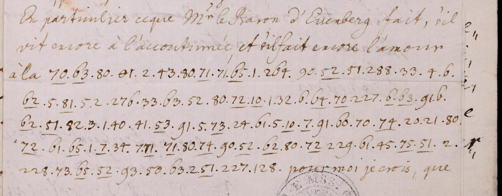

At a glanceKey from adjacent plaintext · partial (86% of the cipher)
- The letters
- Nine letters to Giuseppe Riva (eight in Italian, one in French with the cipher in the middle of its text) in London: six from Benedetto Selvatico Estense (Modena and Vienna, December 1721 to August 1722), one from Giorgio Olivazzi in Milan (17 April 1725) and two from Count Starhemberg in Vienna (20 March 1726) and his secretary (19 February 1727).
- Where
- Biblioteca Estense Universitaria, Modena, Autografoteca Campori, letters S (Selvatico Estense, Starhemberg) and O (Olivazzi). The catalogue calls them “partly ciphered”; none of the nine carries a decipherment (the 27 February and 6 March 1726 letters do, and are the source of the key). Lead 1568 (closed here); Olivazzi is also an item of catalogue 1569.
- The cipher
- One- and two-figure numbers stand for vowels, single consonants and consonant-plus-vowel syllables (a plain and an underlined consonant in each row); underlined small numbers are short words; three-figure numbers are codes for names, titles and common words (201 groups, 74 numbers, none counted read).
- How it was read
- The table was read off the decipherment written between the lines of two Starhemberg letters of 1726 (27 February and 6 March), then changed or added in 15 rows from context in the 1722 letters. Each letter was decoded with the key as frozen on 11 November 2026 (by the contributor’s record, supported by time stamps).
- The count
- A group counts as read when it has a keyed value that stands as transcribed and no doubt mark; codes never count. Per letter 73.7% to 90.9%; no letter is near the 95% bar, so all nine are read in part. This is a count of cipher groups, not of words (see section 05).
- What they say
- Modena’s claim to an indemnity for war damage, raised through Vienna before the Congress of Cambrai (1722); a Milanese complaint about a hostile party (1725); and Starhemberg’s requests that Riva report punctually from London and watch the British court’s dealings with Palm (1726–27).
- Credit
- Transcription, key and reading by Malcolm McBratney, working with AI agents (pull request #475; issues #425, #429, #430, #432, #433, reviewed by Daniel Bourdeau). Two earlier passes of the two undated Selvatico letters by another contributor (
targets/selvatico1719) served as a comparison only. The decipherment of 1726 is by an unknown hand of the time. - Still open
- 201 code groups; the underline conflicts of the letter of 20 March 1726; row 5 of the table; how the first key (K2) was read off the 1726 glosses, of which only ten pairs were kept; Olivazzi’s second leaf. Lindgren’s 2016 article on Riva, which cites the Starhemberg file, could not be read, so no first reading is claimed.
01 The letters
Giuseppe (Gioseffo) Riva was the Duke of Modena’s secretary and agent in London; his incoming letters are in Modena, filed by writer. Eleven letters of three writers use one number table. Two of them, Starhemberg to Riva of 27 February and 6 March 1726, carry a decipherment of the time between the lines; they are the source of the key and are not read here. The nine without a gloss are:
| Letter | Leaves | Groups | Read (strict) |
|---|---|---|---|
| Selvatico, Modena, 10 Dec [1721, probable] | cc. 14–15 | 48 | 40 (83.3%) |
| Selvatico, Modena, 2 Jan [1722] | cc. 2–3 | 176 | 149 (84.7%) |
| Selvatico, Vienna, 10 Jun 1722 | cc. 21–22 | 150 | 128 (85.3%) |
| Selvatico, Vienna, 29 Jul 1722 | cc. 25–26 | 307 | 279 (90.9%) |
| Selvatico, Vienna, 8 Aug 1722 | cc. 35–36 | 757 | 675 (89.2%) |
| Selvatico, Vienna, 12 Aug 1722 | cc. 23–24 | 222 | 191 (86.0%) |
| Olivazzi, Milan, 17 Apr 1725 | cc. 1–2 | 377 | 278 (73.7%) |
| Starhemberg, Vienna, 20 Mar 1726 | cc. 21–22 | 406 | 351 (86.5%) |
| Starhemberg’s secretary, Vienna, 19 Feb 1727 | cc. 23–24 | 97 | 84 (86.6%) |
| All nine (a sum, not a claim about any one letter) | 2,540 | 2,175 (85.6%) |
The library files the Starhemberg letters under Guido von Starhemberg. The content fits Conrad Sigmund von Starhemberg, the Emperor’s envoy in London: the letter of 19 February 1727 is said to speak of a household and children in London (this is in the French clear text, which the files do not carry, so it rests on the notes alone and cannot be checked here), and the letter of 31 May 1721 (in the other Starhemberg page) says “il mio ritorno in Inghilterra è certissimo … con carattere d’Ambasciatore”. The catalogue name is kept. The 1727 letter is written by a secretary on Starhemberg’s behalf, in French, and its cipher begins where the lady’s name should stand in a story about a baron’s courtship.
02 The cipher and its key
A syllabic number table. Single figures 1–8 are a e i o r s t u. A ten is a consonant alone (10 b, 20 c, 30 d, 40 f, 50 g, 60 l, 70 m, 80 n, 90 p). A two-figure group XY with Y from 1 to 5 is a consonant with a e i o u; each row has two consonants, one for the plain group and one for the underlined group (row 5 g / r, 6 l / s, 7 m / t, 8 n / v, 9 p / z; rows 1–4 give b c d f either way). Underlined single figures and tens are words (1_ non, 3_ in, 4_ il, 6_ che, 7_ con, 8_ per, 10_ -ment-, 40_ stato, 70_ tutto). An x-shaped sign before a vowel group adds h. A short stroke above a group doubles the consonant or marks an accent. Numbers of 100 and over are codes. Dates are written in clear as underlined numerals, which is how three of them were first mistaken for cipher.

The first version of the key (K2) was read off the interlinear decipherment of the two glossed Starhemberg letters of 1726. K3, the key used for every count, changes or adds 15 rows from context in the 1722 letters (8_ per, 10_ -ment-, 70_ tutto, 53 gi, 54 go, 55 gu, 60_ si, 40_ stato, the sign 01 qua and six codes) and removes seven rows that no gloss had given. An earlier description said K3 was K2 “plus 56 repairs”; 56 was the number of units of the 1722 letters whose value changed, not the number of rows. The key file is frozen as of 11 November 2026, 21:30 GMT (md5 65b083be…), and is given in full under Full texts.
Row 5 is only half repaired: plain 53, 54 and 55 are g, but plain 51 and 52 are still r in the file, while “ingegnarsi”, “diligente” and “regenti” need plain 52 to be ge. Whether the real table has plain 5x = g and underlined = r is not settled (the notes leave “ra/ga? re/ge?” open); it is listed as open rather than changed after the counts.
The same table is used by three writers, one of them in Milan, which may mean that it is Riva’s own table rather than one correspondent’s (an inference, not shown by the sources). It is not the cipher of the Starhemberg letters of 1720–21 (a different cipher, with its own page), and it is not the 1719 table of targets/selvatico1719, which uses a 1–35 alphabet and has 68 for Corte where this table has 128.
03 What was checked
- Counts.
scripts/build.pyin the folder rebuilds every count from the transcriptions, the key and the list of downgrades; it reproduced all of them at integration, and a second decoder written from the key file and the transcriptions alone agreed with the filed decryptions on the 19 February 1727 letter (97 of 97 groups) and the 20 March 1726 letter (406 of 406). - Control not repeated. The shuffled-key run on the 20 March 1726 letter used the old notation and was not re-run after the date fix.
- Language. The project’s own check (
docs/_validate.py, Italian four-grams): the reading scores −1.96 against −4.18 for random keys of the same structure (z 11), verdict pass. The contributor also ran 5,000 shuffled keys on each group of letters: none as good, except that the 10 December letter alone (48 groups) is too short for the test (44 of 5,000). These runs were not repeated at integration. - Held out or not. K3’s 15 rows were made on the four 1722 letters, so their 88.7% is in-sample. K3 was frozen before the undated letters, the 1727 letter and the Olivazzi letter were transcribed, and each was decoded once with it, by the contributor’s record. Held out from K3 are the 1727 letter (86.6%), Olivazzi (73.7%), the two undated letters (83.3% and 84.7%) and the 20 March 1726 letter (86.5%), which was transcribed before any key for this system existed. The pooled 85.6% includes 1,273 of its 2,175 read groups from the in-sample letters, and 90 of the 2,175 read groups use a K3-changed row (2 to 30 per letter). The order is shown by RFC 3161 time stamps of 11 November 2026 (Sectigo); what they cannot show is that nobody looked earlier.
- Second transcriptions. A blind second transcription of the four 1722 letters by a separate session agrees on 96.5% of groups; a second pass of the Olivazzi letter on 92.1%.
- Images. All 97 groups of the 1727 letter agree with the image of c. 23r, underlines included; a model check by the independent reviewer of 12 November compared 87 groups of the 1726 letter and found 87 agreeing, and the integration check (also a model) compared the 97 groups of the 1727 letter. No person has compared any transcription with the images.
04 What the letters say
- 10 Dec [1721], Selvatico, Modena. He does not believe the Congress will be held and disowns Rangoni’s mission to Paris; in cipher, someone will soon go on to Paris or to a coded place, and orders will follow from the Duke.
- 2 Jan [1722], Modena. The Princes of Modena and Cardinal de Rohan have come from Rome; the Cardinal, laid up with gout at Reggio, is about to leave for France. The contributor reports that the Gaceta de Madrid of 3 February 1722 describes the same journey, which gives the year (not checked here).
- 10 June to 12 August 1722, Vienna. Modena’s claim to an indemnity for war damage, to be raised at the congress. On 8 August the ministers (a coded word, proposed value) tell Riva that the Emperor (proposed value) will never promote the claim (a hole stands before “will ever promote”, so the “never” is not secure) but would rather it were kept quiet, because the other side would then reopen other points, Mirandola among them; on 12 August he writes that the Emperor (proposed value) will not propose it “per non svegliare li cani che dormono” (so as not to wake sleeping dogs).
- 17 Apr 1725, Olivazzi, Milan. A party working against him: the payments at issue are the excuse, the aim is to keep him in bad repute and from advancement. The least secure of the nine, with many coded persons; the second leaf is decoded, not read.
- 20 Mar 1726, Starhemberg. He thanks Riva for three letters and asks him to report punctually on the court and on general affairs. A yearly 100 pounds sterling is in question; Riva and “the friend in [Holland]” may count on a couple of hundred in fees this year. The middle of the letter has holes.
- 19 Feb 1727, Starhemberg’s secretary. French cover text, then “all of this so far is feigned” (proposed value: the word is read [?feigned], with a supplied letter in fi[n]ta): Riva is to watch closely what passes with Palm (the Emperor’s resident in London, expelled the next month) and what measures the British court takes.
05 How the groups were counted
The counts are per cipher group (a syllable or a word sign). A group is read when it has a keyed value that stands as transcribed and carries no doubt mark; every code, every unkeyed group and every group the reading had to emend or supply is not read. 94 downgrades are listed in overrides.tsv (93 of them changed a group from read to not read), none upgraded by hand. Where a word has one open syllable, its other syllables still count as read, so this is a generous measure. A rough count by words from the reading files, made at integration (a word with any bracket or question mark as open), gives about 74% for the nine letters and about 60% for Olivazzi; this is an estimate, not a measurement, and no figure on this page or in the Full-texts cards uses it. Either way every letter is under the 95% bar and the class is read in part.
06 What remains open
- 201 code groups of 74 numbers, none counted read; the glosses give only 288 = V.S. and 214 = Olanda.
holes.mdlists each with the proposed value. - Eight places in the 20 March 1726 letter where the plain and the underlined group disagree with the word, and three odd words; the full-resolution crops were not re-viewed for this page.
- Row 5 (plain 51 and 52), and 5_ chi, 30_ esser, 50_, 0_, 9_ and 9.
- K2 itself cannot be re-derived: only ten gloss pairs and a rough group reading of c. 5r were written down, and the two glossed letters are not transcribed in full.
- Olivazzi: four stretches and the right edge of the second leaf under the facing leaf.
- Clear text of all letters: one reader. Modena-side records (Archivio di Stato, the cifrari) could hold a key and were not looked at. 398 of 535 further Riva records were viewed and no other letter in this table was found; 111 are recorded as not checked (the folder’s figures leave 26 of the 535 unaccounted for).
07 Earlier work
None of the nine letters is read elsewhere in this repository: targets/selvatico1719 lists the 1722 and undated Selvatico letters as not solved and the Starhemberg letters as not worked. Lowell Lindgren’s article on Riva (Il Saggiatore musicale 23/2, 2016, pp. 277–374) was not seen: it is sold by the publisher’s platform, and at second hand it maps Riva’s correspondence and cites a Starhemberg letter of 13 March 1726, so its author used the file. Whether he prints or deciphers any cipher is not known here, and priority is not established. Open copies of Lindgren and Timms (2003) and Stefani show no cipher, no Selvatico and no Olivazzi in the parts searched.
Full texts
The transcription and the decryption of every document on this page, so that the reading can be used and checked. Short files are shown here; all are in the repository.
Benedetto Selvatico Estense (Modena) to Giuseppe Riva (London), '10 Xbre' read in part
From Modena. In clear: he never believes the Congress will be held; Rangoni is in Paris against his advice and at great cost. In cipher: he is sorry to say the contrary of what was asked, because someone (the person asking to come home, or Riva) will soon go on to Paris or to a coded place; orders from the Duke will follow by this or the next post. Context: the run-up to the Congress of Cambrai.
Builds coherent sentences, but under the read bar of 95% of words read as sense (83% here); the holes are marked in the reading.
Transcription
# Selvatico Estense (Modena) to Riva, "10 Xbre" [1721?], Campori S, Selvatico Estense cc.14-15; cipher on 14r.
# Lines copied unchanged from b75_selvatico_undated/tx/selv_undated_passD_v2_notation.txt (md5 28b2c2094c0222d9957d5dd6aa7c917c); only the lines of this letter. Notation: scripts/build.py header and NOTES.md.
# Selvatico Estense to Riva, two letters without year. Pass D (Claude, b75), PARSER.md P1 notation.
# Source: Modena, Biblioteca Estense, Autografoteca Campori, Selvatico Estense, cc.2-3 and cc.14-15; IIIF tile mosaics img/0002r.jpg, img/0014r.jpg.
# Line ids = manuscript lines counted from the top of the page (date line included). Clear text in {}.
# Letter A: c.2r, headed "Mod.a L. 2 Genaro" (L01), unsigned. cc.2v, 3r, 3v blank.
# Letter B: c.14r, headed "Mod.a L. X Xbre" (L02), signed "... Selvatico". c.15v address "A Monsieur Monsieur Riva Secretaire de S.A.S. de Modene a Londres". cc.14v, 15r blank.
14r.L15: {il suo ritorno in Patria. Quanto mi duole}
14r.L16: 73|33 34 82_ 5 62 33 52_ 4_ 7_ 70 51_ 53_ 4
14r.L17: 8_ 6_ 90 52_ 6 74_ 91 62_ 51_' 4' 1 91 53_ 53
14r.L18: 4 1 297|293. 31 62' 194^2 33 259 261 82 x1 8 51'
14r.L19: 41 5 62_ 4 226 62_ 51_ 4 {nel venturo}Decryption
# selvatico_1721-12-10: each manuscript line as transcribed, then its decryption with key.tsv (K3), unit for unit.
# «..» clear text; UPPER = word sign; {n} code or group without a key value; {n=WORD} code with a proposed value (counted not read); # illegible; [x] struck.
14r.L15: {il suo ritorno in Patria. Quanto mi duole}
«il suo ritorno in Patria. Quanto mi duole»
14r.L16: 73|33 34 82_ 5 62 33 52_ 4_ 7_ 70 51_ 53_ 4
mi do ve r le di re IL CON m ra ri o
14r.L17: 8_ 6_ 90 52_ 6 74_ 91 62_ 51_' 4' 1 91 53_ 53
PER CHE p re s to pa se ra' o' a pa ri gi
14r.L18: 4 1 297|293. 31 62' 194^2 33 259 261 82 x1 8 51'
o a {297} da le' {194}^2 di {259} {261=SERENISSIMO} ne ha u ra'
14r.L19: 41 5 62_ 4 226 62_ 51_ 4 {nel venturo}
fa r se o {226=QUEST} se ra o «nel venturo»Reading
# Selvatico Estense (Modena) to Giuseppe Riva (London), "10 Xbre" [1721?], cc.14-15: reading Conventions: text between asterisks is from cipher, the rest was written in clear. [181] = a code with no value; [?word] = a code value or word proposed from context, not read; a letter in brackets inside a word = supplied or emended (the unit is counted not read in units.tsv); [...] = groups not read; (?) = doubtful reading of the clear hand; [clear text not transcribed here] = clear passage left out. Word division, capitals, accents and doubled consonants are editorial (the cipher writes doubled consonants once or marks them with a stroke). ## Reading Mod.a L. X Xbre. Il S.r Fattor Tori(?) mi fa havere una sua lettera, e le rendo grazie delle espressioni che contiene, assicurandola che è da me contraposta con tutta la stima dovuta al suo merito. Io poi non credo mai che si faccia il Congresso, e certamente per mio consiglio il March. Rangoni non è a Parigi: io scrissi di colà che non si mandasse, ma il Padrone ha giudicato diversamente, e ci costa doppo la sua partenza vicino a 6 mila doppie di Spagna. Massi(?) mi fa una istanza perché insinui(?) il suo ritorno in Patria. Quanto mi duole *[d]i doverle dire il con[t]rario, perché presto passerà o a Parigi o a [297]. Dalle [?lettere] di [259] [?Serenissima] ne haurà f[o]rse o [?questa] sera o* nel venturo ordinario qualche preciso ordine, e riserbandomi ad impiegarmi in qualche più felice occasione di servirla, haurò per lei in ogni luogo quella stima che merita, e che le devo, e resto in tanto col rispetto [clear text not transcribed here].
Translation
# Selvatico Estense (Modena) to Giuseppe Riva (London), "10 Xbre" [1721?], cc.14-15: English Same holes as the reading, in the same places. Text between asterisks is from cipher. ## Translation Modena, 10 December. The agent Tori(?) has passed me a letter of yours, and I thank you for what it says, assuring you that I answer it with all the esteem your merit deserves. For my part I do not believe the Congress will ever be held, and it is certainly not by my advice that Marchese Rangoni is in Paris: I wrote from there that he should not be sent, but the Master judged otherwise, and since he left it has cost us close to 6,000 Spanish doubloons. Massi(?) asks me to put in a word(?) for his return home. How it pains me *[?to] have to tell you the [?contrary], because he will soon go on either to Paris or to [297]. From the [?letters] of [259] [?Most Serene] you will [?perhaps] have, either [?this] evening or* by the next post, some precise order; and keeping myself for some happier occasion to serve you, I shall have for you everywhere the esteem you deserve and I owe you, and remain meanwhile with respect [clear text not transcribed here].
Benedetto Selvatico Estense (Modena) to Giuseppe Riva (London), '2 Genaro' read in part
From Modena, almost all in cipher. No letters from a coded person (probably Riva) by this post. The Princes of Modena have come back from Rome with Cardinal de Rohan, dined at Modena and gone on to Reggio; the Cardinal, held there by gout, is said to be about to leave for France. The Duke seems to mean to post the coded person elsewhere and will write.
Builds coherent sentences, but under the read bar of 95% of words read as sense (85% here); the holes are marked in the reading.
Transcription
# Selvatico Estense (Modena) to Riva, "2 Genaro" [1722], cc.2-3; cipher on 2r.
# Lines copied unchanged from b75_selvatico_undated/tx/selv_undated_passD_v2_notation.txt (md5 28b2c2094c0222d9957d5dd6aa7c917c); only the lines of this letter. Notation: scripts/build.py header and NOTES.md.
# Selvatico Estense to Riva, two letters without year. Pass D (Claude, b75), PARSER.md P1 notation.
# Source: Modena, Biblioteca Estense, Autografoteca Campori, Selvatico Estense, cc.2-3 and cc.14-15; IIIF tile mosaics img/0002r.jpg, img/0014r.jpg.
# Line ids = manuscript lines counted from the top of the page (date line included). Clear text in {}.
# Letter A: c.2r, headed "Mod.a L. 2 Genaro" (L01), unsigned. cc.2v, 3r, 3v blank.
2r.L02: {Siamo} 3_ 226 4 5 33 81 53_ 4 62_ 80 91_
2r.L03: 194^2 33? 347 71 8_ 4' 1_ 63_ 61 6 23? 1?
2r.L04: 33 31 5 63 211^2 32 62' 24 62_ 366^2
2r.L05: 2 32 60 53_ 74_ 5 84 32 261^3 220^3
2r.L06: 6_ 8 83[hatched] 71_ 10_ 7_ 4_ 114 33 54_ x1 80
2r.L07: 64_ 80 82_ 85 73_ 31 54_ 71 1 143 2
2r.L08: 34 94' 33 30_-63_ 42 5 71 73_ 1 60
2r.L09: 64_ 64 90 51_ 80 64_ 64_ 84 91 61_' 73_
2r.L10: # 52_ 53' 4. {Vi si trattiene} 4_ 114
2r.L11: 82 63_ 61_' 230 91 5 71_ 40_ 3_ 7_ 74 31 74_
2r.L12: 31 61' 54 71_; 2 63 33 22 60_ 6_ 63_ 1
2r.L13: 3_-50_ 33 91 5 73_ 52_ 8_ 235.
2r.L14: 91 52_ 6_ 259 261 84_ 50 63 1 33 6 94 52_' 32 61'
2r.L15: 8_ 64_ 81 33 347 1 1 60 7 51_ 91 5 72_ 2
2r.L16: 8_ 4' 3_ 72 80 32 51_' 71 61' 65_ 1 194[overwritten] 4_ 93 5'
2r.L17: 90 52_ 23 64.
# Letter B: c.14r, headed "Mod.a L. X Xbre" (L02), signed "... Selvatico". c.15v address "A Monsieur Monsieur Riva Secretaire de S.A.S. de Modene a Londres". cc.14v, 15r blank.Decryption
# selvatico_1722-01-02: each manuscript line as transcribed, then its decryption with key.tsv (K3), unit for unit.
# «..» clear text; UPPER = word sign; {n} code or group without a key value; {n=WORD} code with a proposed value (counted not read); # illegible; [x] struck.
2r.L02: {Siamo} 3_ 226 4 5 33 81 53_ 4 62_ 80 91_
«Siamo» IN {226=QUEST} o r di na ri o se n za
2r.L03: 194^2 33? 347 71 8_ 4' 1_ 63_ 61 6 23? 1?
{194}^2 di {347} ma PER o' NON si la s ci a
2r.L04: 33 31 5 63 211^2 32 62' 24 62_ 366^2
di da r li {211}^2 de le' co se {366}^2
2r.L05: 2 32 60 53_ 74_ 5 84 32 261^3 220^3
e de l ri to r no de {261=SERENISSIMO}^3 {220}^3
2r.L06: 6_ 8 83[hatched] 71_ 10_ 7_ 4_ 114 33 54_ x1 80
CHE u ni ta MENT CON IL {114} di ro ha n
2r.L07: 64_ 80 82_ 85 73_ 31 54_ 71 1 143 2
so n ve nu ti da ro ma a {143} e
2r.L08: 34 94' 33 30_-63_ 42 5 71 73_ 1 60
do po' di {30_} si fe r ma ti a l
2r.L09: 64_ 64 90 51_ 80 64_ 64_ 84 91 61_' 73_
so lo p ra n so so no pa sa' ti
2r.L10: # 52_ 53' 4. {Vi si trattiene} 4_ 114
# re gi' o «Vi si trattiene» IL {114}
2r.L11: 82 63_ 61_' 230 91 5 71_ 40_ 3_ 7_ 74 31 74_
ne si sa' {230} pa r ta STATO IN CON mo da to
2r.L12: 31 61' 54 71_; 2 63 33 22 60_ 6_ 63_ 1
da la' go ta e li di ce si CHE si a
2r.L13: 3_-50_ 33 91 5 73_ 52_ 8_ 235.
IN {50_} di pa r ti re PER {235}
2r.L14: 91 52_ 6_ 259 261 84_ 50 63 1 33 6 94 52_' 32 61'
pa re CHE {259} {261=SERENISSIMO} vo g li a di s po re' de la'
2r.L15: 8_ 64_ 81 33 347 1 1 60 7 51_ 91 5 72_ 2
PER so na di {347} a a l t ra pa r te e
2r.L16: 8_ 4' 3_ 72 80 32 51_' 71 61' 65_ 1 194[overwritten] 4_ 93 5'
PER o' IN me n de ra' ma la' su a {194} IL pi r'
2r.L17: 90 52_ 23 64.
p re ci loReading
# Selvatico Estense (Modena) to Giuseppe Riva (London), "2 Genaro" [1722], cc.2-3: reading Conventions: text between asterisks is from cipher, the rest was written in clear. [181] = a code with no value; [?word] = a code value or word proposed from context, not read; a letter in brackets inside a word = supplied or emended (the unit is counted not read in units.tsv); [...] = groups not read; (?) = doubtful reading of the clear hand; [clear text not transcribed here] = clear passage left out. Word division, capitals, accents and doubled consonants are editorial (the cipher writes doubled consonants once or marks them with a stroke). ## Reading Mod.a L. 2 Genaro. Siamo *in quest'ordinario senza [?lettere] di [347], ma però non si lascia di darli [211] delle cose [366] e del ritorno de' [?Serenissimi] [?Principi], che unitamente con il [?Cardinale] di Rohan son venuti da Roma a [?Modena] e, dopo di [?esser]si fermati al solo pranso, sono passati [...] Reggio.* Vi si trattiene *il [?Cardinale], né si sa [?quando] parta, stato incomodato dalla gotta; e lì dicesi che sia in [50_] di partire per [?Francia]. Pare che [259] [?Serenissima] voglia disporre della persona di [347] a altra parte, e però in[t]enderà [d]alla sua [?lettera] il pi[ù] preci[s]o.*
Translation
# Selvatico Estense (Modena) to Giuseppe Riva (London), "2 Genaro" [1722], cc.2-3: English Same holes as the reading, in the same places. Text between asterisks is from cipher. ## Translation Modena, 2 January. We are *by this post without [?letters] from [347], but we do not fail to give him [211] of [366] matters and of the return of the [?Most Serene] [?Princes], who together with the [?Cardinal] de Rohan came from Rome to [?Modena] and, after [?having] stopped only for dinner, went on [...] Reggio.* There stays *the [?Cardinal], and no one knows [?when] he leaves, having been troubled by gout; and it is said there that he is [50_] to leave for [?France]. It seems that [259] [?Most Serene] wishes to dispose of the person of [347] elsewhere, and so he [?will learn] [?from] his [?letter] the [?more] [?exact] detail.*
Benedetto Selvatico Estense (Vienna) to Giuseppe Riva (London), 10 June 1722 read in part
From Vienna. He asks Riva for what only Riva can tell: whether George I has been won for the Duke of Modena's claims. The ministers in Vienna say that power must take up the Duke's cause at the congress, but fear it will not commit itself; this is at odds with what Modena writes. He needs a sure answer quickly, to persuade Vienna if it is good and to warn the Duke not to hope too much if it is bad.
Builds coherent sentences, but under the read bar of 95% of words read as sense (85% here); the holes are marked in the reading.
Transcription
# Selvatico Estense (Vienna) to Riva, 10 Jun 1722, cc.21-22.
# Lines copied unchanged from b70_selvatico_read/tx/selv1722_passC_claude.txt (md5 36748b19af9d90d8137b92f36c547986); only the lines of this letter. Notation: scripts/build.py header and NOTES.md.
# Selvatico Estense -> Riva, Vienna 1722. Pass C, Claude (agent), 12 Nov 2026, from full-size IIIF tile mosaics (img/*.jpg; strips crops/s_*).
# NOT BLIND: before transcribing, the reader had seen WAINUT passes A/B and key K2, and could not avoid sight-decoding. Digits were set from shape; doubts marked ?.
# Notation: PARSER.md. _ underline; ' short stroke above the group; ^n small raised numeral over the group; ^(...) small raised group at line end; ? doubt; # illegible/blotted; [struck] group cancelled by the writer; {..} clear text; = line-end hyphen; - link stroke.
# Hand: 3 is drawn with a lead-in curl (looks like B or "13"); 8 is drawn as an open curl + loop (looks like "c6"/"&"); 7 is an angular ">"; 9 has a long tail. No separate "c" curl sign was seen in these six pages.
## Letter 1: 10 Jun 1722, c.21r
21r.L04: {tanti} 1 24 72_ 6 71_ 128.
21r.L06: {cioè} 61_ 92 52_ 9_ 63_ 1 94 5 71_
21r.L07: 74_ 60' 1 83 74 33 24 72_ 6 74_ 52_' 8_ 63 188^3 33 287.
21r.L08: 226^3 196^3 41 84' 24 84. 6 22 52_ 61 82 22 63_' 71_' 6_ 24
21r.L09: 72_ 6 71_ 94' 72_ 80 91_ 6' 186^3 3_ 162 32 61 261 133 8_
21r.L10: 94 5 71_ 52_ 2 30 1 63_' 6 72_ 52_ 61 21 8 61_ 33 287 82 =
21r.L11: 60 7_ 50 52_ 64_', {ma fanno nello stesso tempo temere} 6_ 1_
21r.L12: 84 50 63 1 3_- 92 50 81 5 62_ 82. {Questa sono} 4 93 83
21r.L13: 4 82 6_ 72_ 80 54 84 8_ 63_ 25 51_ 33 6 24 5 31 {affatto}
21r.L15: {detto sopra questo particolare} 61_ 80 62_ 44 53_ 84.
21r.L18: {persuadere} 226 196, {se è favorevole, e per avvertire} 287, {acciò}
21r.L19: 1 6 92 53_ 71_ 80 74_ {se è contraria alle di lui speranze concepite.}
## c.21v
21v.L01: {La prego della maggiore sollecitudine, facendoci sperare} 1 61_' 3
21v.L02: 83_ 23 84 4_ 72_ 70 94 32 60 7_- 50 52_ 64_'. {La ringrazio}
## Letter 2: 29 Jul 1722, c.25r
## c.25v
## Letter 4: 12 Aug 1722, c.23r
## c.23vTranscription
# Selvatico Estense to Riva, Vienna 10 Jun 1722, cc.21r-v. b74 BLIND pass (reader: b74 worker). Notation: b70 PARSER.md P1.
21r.L1: {Mio Signore.}
21r.L2: {Vienna 10 Giugno 1722}
21r.L3: {Accuso aver ricevuto la prima sua, dalla quale ho inteso molte cose spet=}
21r.L4: {tanti} 1 24 72_ 6 71_ 128. {Avrei pero desiderato d'avere altre}
21r.L5: {Notizie, ed in particolare quelle, che sono di tanta Necessita a sapersi,}
21r.L6: {e che non posso sperare, che da lei; cioe} 61_ 92 52_ 9_ 63_ 1 94 5 71_
21r.L7: 74_ 60' 1 83 74 33 24 72_ 6 74_ 52'_ 8_ 63 188^3 33 287.
21r.L8: 226^3 198^3 41 84' 24 84 6 22 52_ 61 82 22 63'_ 71'_ 6_ 24
21r.L9: 72_ 6 71_ 94' 72_ 80 91_ 6' 186^3 3_ 162 32 61 261 133 8_
21r.L10: 94 5 71_ 52_ 2 30 1 63' 6 72_ 52_ 61 21 8 61_ 33 287 82=
21r.L11: 60? 7_ 50 52_ 64'_, {ma fanno nello stesso Tempo temere} 6_ 1_
21r.L12: 84 90 63 1 3_- 92 50 81 5 62_ 82. {Questa sono} 4 93? 83
21r.L13: 4 82 6_ 72_ 80 54 84 8_ 63_ 25 51_ 33 6 24 5 31 {affatto}
21r.L14: {da cio, che mi viene scritto da Modena, e da quello, che mi ha}
21r.L15: {detto sopra questo Particolare} 61_ 80 62_ 44 53_ 84. {Lei abbia}
21r.L16: {per cio l'Incomodo d'avvisarmene distintamente, essendo impaziente}
21r.L17: {d'avere una sicura, e certa Notizia sopra questo Punto per potere}
21r.L18: {persuadere} 226 198, {se e favorevole, e per avvertire} 287, {accio}
21r.L19: 1 6 92 53_ 71_ 80 74_ {se e contraria alle di lui speranze concepite.}
21v.L1: {La prego della maggiore sollecitudine, facendoci sperare} 1 61'_ 3
21v.L2: 83_ 23 84 4_ 72_ 70 94 32 60 7_- 50 52_ 64'_. {La ringrazio}
21v.L3: {delli Lumi, che mi da nella sua, quali sono stati graditi da S.A.S.,}
21v.L4: {e pregandola per la Continuazione di questi mi protesto}
21v.L5: {Di Lei mio Sig.re}
21v.L6: {Devotiss.mo Aff.mo Ser.re vero}
21v.L7: {Benedetto Luigi Estense Salvatico.}Decryption
# selvatico_1722-06-10: each manuscript line as transcribed, then its decryption with key.tsv (K3), unit for unit.
# «..» clear text; UPPER = word sign; {n} code or group without a key value; {n=WORD} code with a proposed value (counted not read); # illegible; [x] struck.
21r.L04: {tanti} 1 24 72_ 6 71_ 128.
«tanti» a co te s ta {128=CORTE}
21r.L06: {cioè} 61_ 92 52_ 9_ 63_ 1 94 5 71_
«cioè» sa pe re {9_} si a po r ta
21r.L07: 74_ 60' 1 83 74 33 24 72_ 6 74_ 52_' 8_ 63 188^3 33 287.
to l' a ni mo di co te s to re' PER li {188}^3 di {287}
21r.L08: 226^3 196^3 41 84' 24 84. 6 22 52_ 61 82 22 63_' 71_' 6_ 24
{226=QUEST}^3 {196}^3 fa no' co no s ce re la ne ce si' ta' CHE co
21r.L09: 72_ 6 71_ 94' 72_ 80 91_ 6' 186^3 3_ 162 32 61 261 133 8_
te s ta po' te n za s' {186}^3 IN {162=FAVOR} de la {261=SERENISSIMO} {133} PER
21r.L10: 94 5 71_ 52_ 2 30 1 63_' 6 72_ 52_ 61 21 8 61_ 33 287 82 =
po r ta re e d a si' s te re la ca u sa di {287} ne
21r.L11: 60 7_ 50 52_ 64_', {ma fanno nello stesso tempo temere} 6_ 1_
l CON g re so' «ma fanno nello stesso tempo temere» CHE NON
21r.L12: 84 50 63 1 3_- 92 50 81 5 62_ 82. {Questa sono} 4 93 83
no g li a IN pe g na r se ne «Questa sono» o pi ni
21r.L13: 4 82 6_ 72_ 80 54 84 8_ 63_ 25 51_ 33 6 24 5 31 {affatto}
o ne CHE te n go no PER si cu ra di s co r da «affatto»
21r.L15: {detto sopra questo particolare} 61_ 80 62_ 44 53_ 84.
«detto sopra questo particolare» sa n se fo ri no
21r.L18: {persuadere} 226 196, {se è favorevole, e per avvertire} 287, {acciò}
«persuadere» {226=QUEST} {196} «se è favorevole, e per avvertire» {287} «acciò»
21r.L19: 1 6 92 53_ 71_ 80 74_ {se è contraria alle di lui speranze concepite.}
a s pe ri ta n to «se è contraria alle di lui speranze concepite.»
21v.L01: {La prego della maggiore sollecitudine, facendoci sperare} 1 61_' 3
«La prego della maggiore sollecitudine, facendoci sperare» a sa' i
21v.L02: 83_ 23 84 4_ 72_ 70 94 32 60 7_- 50 52_ 64_'. {La ringrazio}
vi ci no IL te m po de l CON g re so' «La ringrazio»Reading
# Selvatico Estense (Vienna) to Giuseppe Riva (London), 10 June 1722, cc.21-22: reading Conventions: text between asterisks is from cipher, the rest was written in clear. [181] = a code with no value; [?word] = a code value or word proposed from context, not read; a letter in brackets inside a word = supplied or emended (the unit is counted not read in units.tsv); [...] = groups not read; (?) = doubtful reading of the clear hand; [clear text not transcribed here] = clear passage left out. Word division, capitals, accents and doubled consonants are editorial (the cipher writes doubled consonants once or marks them with a stroke). ## Reading Accuso aver ricevuta la prima sua, dalla quale ho inteso molte cose spettanti *a cotesta [?corte]*. Avrei però desiderato d'avere altre notizie, ed in particolare quelle che sono di tanta necessità a sapersi, e che non posso sperare che da lei, cioè *sapere [?se] si à portato l'animo di cotesto Rè per li [188] di [287]. [?Questi] [196] fanno conoscere la necessità che cotesta potenza s'[186] in [?favore] della [?Serenissima] [133] per portare ed assistere la causa di [287] nel congresso*, ma fanno nello stesso tempo temere *che non [v]oglia impegnarsene*. Questa *[...] opinione che tengono per sicura discorda* affatto da ciò che mi viene scritto da Modena, e da quello che m'ha detto sopra questo particolare *[?Sanseforino]*. Lei abbia perciò l'incomodo d'avvisarmene distintamente, essendo impaziente d'avere una sicura e certa notizia sopra questo punto per potere persuadere *[?questo] [196]*, se è favorevole, e per avvertire *[287]*, acciò *[...] speri tanto* se è contraria alle di lui speranze concepite. La prego della maggiore sollecitudine, facendoci sperare *assai vicino il tempo del congresso*.
Translation
# Selvatico Estense (Vienna) to Giuseppe Riva (London), 10 June 1722, cc.21-22: English Same holes as the reading, in the same places. Text between asterisks is from cipher. ## Translation I acknowledge your first letter, from which I learned many things concerning *that [?court]*. I should however have wished for other news, and in particular what is so necessary to know and what I can hope for only from you, namely *to know [?whether] that King's mind has been brought round for the [188] of [287]. [?These] [196] make known the need for that power to [186] in [?favour] of the [?Most Serene] [133], to carry and assist the cause of [287] at the congress*, but at the same time they make one fear *that it will not [?wish] to commit itself*. This *[...] opinion, which they hold as certain, is at odds* entirely with what is written to me from Modena, and with what *[?Sanseforino]* told me on this matter. Please therefore take the trouble to inform me exactly, as I am impatient for sure and certain news on this point, so as to persuade *[?this] [196]* if it is favourable, and to warn *[287]*, so that he *[...] hope so much*, if it is contrary to the hopes he has formed. I beg the greatest speed, as we are given to hope *that the time of the congress is very near*.
Benedetto Selvatico Estense (Vienna) to Giuseppe Riva (London), 29 July 1722 read in part
The state of the Duke's affairs at Vienna: everything hangs on the congress and on the help two coded powers (England and France, proposed) give there. Riva should keep George I well disposed and commit him to the indemnity, for which a coded principal (the Emperor, proposed) has declared he will give every assistance if those two do not drop it. The Naples credits sleep until details come from Modena. The ministers are divided, most favour the Duke.
Builds coherent sentences, but under the read bar of 95% of words read as sense (91% here); the holes are marked in the reading.
Transcription
# Selvatico Estense (Vienna) to Riva, 29 Jul 1722, cc.25-26.
# Lines copied unchanged from b70_selvatico_read/tx/selv1722_passC_claude.txt (md5 36748b19af9d90d8137b92f36c547986); only the lines of this letter. Notation: scripts/build.py header and NOTES.md.
# Selvatico Estense -> Riva, Vienna 1722. Pass C, Claude (agent), 12 Nov 2026, from full-size IIIF tile mosaics (img/*.jpg; strips crops/s_*).
# NOT BLIND: before transcribing, the reader had seen WAINUT passes A/B and key K2, and could not avoid sight-decoding. Digits were set from shape; doubts marked ?.
# Notation: PARSER.md. _ underline; ' short stroke above the group; ^n small raised numeral over the group; ^(...) small raised group at line end; ? doubt; # illegible/blotted; [struck] group cancelled by the writer; {..} clear text; = line-end hyphen; - link stroke.
# Hand: 3 is drawn with a lead-in curl (looks like B or "13"); 8 is drawn as an open curl + loop (looks like "c6"/"&"); 7 is an angular ">"; 9 has a long tail. No separate "c" curl sign was seen in these six pages.
## Letter 1: 10 Jun 1722, c.21r
## c.21v
## Letter 2: 29 Jul 1722, c.25r
25r.L06: {molti} 65 73 6_ 2 51_ 84 82 22 61_ 53_' 1 61_ 92 5 63_
25r.L07: [struck] {La prego della continuazione di sue notizie, quali oltre}
25r.L09: {Lei mi domanda} 64 40_ 32 60' 1 41' =
25r.L10: 53_ 33 259 261 3_ 226 128 2 30 10 52_ 82_-10_
25r.L11: 64_ 33 6 41 23' 4 1 226 95 80 74_ 7_ 4_ 33 5 62,
25r.L12: 6_ 70_ 33 92 80 32 31 60 7_- 50 52_ 64_' 2 31 61'
25r.L13: 1 60_' 6 72_ 80 91_ 6_ 61_ 51_' 8_ 31 52_ 3_ 227 60'
25r.L14: 236 2 61 235. 113 ^(52_) 6_ 62 3 60_ 90 54_ 25 53_
25r.L15: 33 72_ 82 52_ 33 15 4 80 62_ 80 73_-10_ 24 72_ 6 =
25r.L16: 74_ 52_ 2 30 3_- 92 50 81 5 64 8_ 60' 3_- 32 83? =
25r.L17: 91_ 93_ 4 82 8_ 61 228 60' 181 6' 2' 33 5_ 1 51_ 74_
25r.L18: 33 31 52_ 4 50 83 1 63_' 6 72_ 80 91_ 95 5? 6_
25r.L19: 62 65_ 32 72_' 35 2 94 72_ 80 92_ 1_ 1 11' 80 34 =
25r.L20: 83 84 60' 1 41' 52_.
25r.L21: 63 20 52_ 33 73_ 33 81 94 60 64_ 84
## c.25v
25v.L01: 34 5 72 80 34 43 84 1 6_ 1 53_ 83_ 31 143
25v.L02: 4_ 32 71_ 50 63 4 32 61' 71 83 2 51_ 7_ 25 3
25v.L03: 45' 7 51_ 71_' 74 144 2 64_ 30 6 41 74_' 61 91 5 =
25v.L04: 72_ 32 60 65_ 4 20 52_ 33 74_.
25v.L05: 8_ 121 63_ 24 73 80 23 1 90 52_ 62_ 80 =
25v.L06: 72_-10_ 1 7 51_ 71_ 52_ 71 1_ 6' 2' 370 32 72_ 5 =
25v.L07: 73 81 74_ 24 61_ 1 60 25 81. 226^3 196^3 64_ 84
25v.L08: 33 33 42' 52_ 80 72_ 4 93 4 82 71 61 71 53'? 4 =
25v.L09: 52_ 91 5 72_ 2' 94 5 71_ 71_ 8_ 259 261.
## Letter 4: 12 Aug 1722, c.23r
## c.23vTranscription
# Selvatico Estense to Riva, Vienna 29 Jul 1722, cc.25r-v. b74 BLIND pass.
25r.L1: {Sig.r Giuseppe mio Sig.re}
25r.L2: {Vienna 29 Luglio 1722}
25r.L3: {Eccomi dopo essere rimesso dal mio Incomodo cagionatomi dalla dis=}
25r.L4: {grazia d'una Caduta a ringraziarla delle due Lettere, che}
25r.L5: {s'e compiaciuta di scrivermi, dalle quali ho ricevuto molti}
25r.L6: 65 73 6_ 2 51_ 84 82 22 61_ 53'_ 1 61_ 92 5 63_
25r.L7: 80'?. {La prego della Continuazione di sue Notizie, quali oltre}
25r.L8: {l'utile ne ricava ancora S.A.S. il Sig.r Principe non ordina=}
25r.L9: {rio Gradimento. Lei mi domanda} 64 40_ 32 60' 1 41' =
25r.L10: 53_ 33 259 261 3_ 226 128 2 30 10 52_ 82_-10_
25r.L11: 64'_ 33 6 41 23' 4 1 226 95 80 74_ 7_ 4_ 33 5 62,
25r.L12: 6_ 70_ 33 92 80 32 31 60 7_- 50 52_ 64'_ 2 31 61'
25r.L13: 1 60'_ 6 72_ 80 91 6_ 61_ 51'_ 8_ 31 52_ 3_ 227 60'
25r.L14: 236 2 61 235. 113 ^(52_) 6_ 62 3 60_ 90 54_ 25 53_
25r.L15: 33 72_ 82 52_ 33 15 4 80 62_ 80 73_-10_ 24 72_ 6=
25r.L16: 74_ 52'_ 2 30 3_-92 50 81 5 64 8_ 60' 3_-32 83=
25r.L17: 91_ 93 4 82 8_ 61 228 60' 181 6' 2' 33 5_ 1 51_ 74_
25r.L18: 33 31 52_ 4 50 83 1 63'_ 6 72_ 80 91_ 95 [struck] 6_
25r.L19: 62 65_ 32 72'_ 35 2 94 72_ 80 92_ 1_ 1 11' 80 34=
25r.L20: 83 84 60' 1 41' 52_.
25r.L21: 63 20 52_ 33 73_ 33 81 94 60 64_ 84
25v.L1: 34 5 72 80 34 43 84 1 6_ 1 53'_ 83_ 31 143
25v.L2: 4_ 32 71_ 50 63 4 32 61' 71 83 2 51_ 7_ 25 3
25v.L3: 45' 7 51_ 71'_ 74 144 2 64_ 33 6 41 74'_ 61 91 5=
25v.L4: 72_ 32 60 65_ 4 20 52_ 33 74_.
25v.L5: 8_ 121 63_ 24 73 80 23 1 90 52_ 62_ 80=
25v.L6: 72_-10_ 1 7 51_ 71_ 52_ 71 1_ 6' 2' 370 32 72_ 5=
25v.L7: 73 81 74_ 24 61_ 1 60 25 81. 226^3 198^3 64_ 84'
25v.L8: 33 33 42' 52_ 80 72_ 4 93 4 82 71 61 71 53'? 4=
25v.L9: 52_ 91 5 72_ 2' 94 5 71_ 71_ 8_ 259 261.
25v.L10: {mi continui il suo riverito Amore, e s'assi=}
25v.L11: {curi, che desiderero sempre di comparire}
25v.L12: {Di Lei Sig.r Giuseppe mio Sig.re}
25v.L13: {Devotiss.mo Aff.mo Ser.e vero}
25v.L14: {Benedetto Luigi Estense Salvatico}Decryption
# selvatico_1722-07-29: each manuscript line as transcribed, then its decryption with key.tsv (K3), unit for unit.
# «..» clear text; UPPER = word sign; {n} code or group without a key value; {n=WORD} code with a proposed value (counted not read); # illegible; [x] struck.
25r.L06: {molti} 65 73 6_ 2 51_ 84 82 22 61_ 53_' 1 61_ 92 5 63_
«molti» lu mi CHE e ra no ne ce sa ri' a sa pe r si
25r.L07: [struck] {La prego della continuazione di sue notizie, quali oltre}
[x] «La prego della continuazione di sue notizie, quali oltre»
25r.L09: {Lei mi domanda} 64 40_ 32 60' 1 41' =
«Lei mi domanda» lo STATO de l' a fa'
25r.L10: 53_ 33 259 261 3_ 226 128 2 30 10 52_ 82_-10_
ri di {259} {261=SERENISSIMO} IN {226=QUEST} {128=CORTE} e d b re ve MENT
25r.L11: 64_ 33 6 41 23' 4 1 226 95 80 74_ 7_ 4_ 33 5 62,
so di s fa ci' o a {226=QUEST} pu n to CON IL di r le
25r.L12: 6_ 70_ 33 92 80 32 31 60 7_- 50 52_ 64_' 2 31 61'
CHE TUTTO di pe n de da l CON g re so' e da la'
25r.L13: 1 60_' 6 72_ 80 91_ 6_ 61_ 51_' 8_ 31 52_ 3_ 227 60'
a si' s te n za CHE sa ra' PER da re IN {227=QUEL} l'
25r.L14: 236 2 61 235. 113 ^(52_) 6_ 62 3 60_ 90 54_ 25 53_
{236} e la {235} {113} re CHE le i si p ro cu ri
25r.L15: 33 72_ 82 52_ 33 15 4 80 62_ 80 73_-10_ 24 72_ 6 =
di te ne re di bu o n se n ti MENT co te s
25r.L16: 74_ 52_ 2 30 3_- 92 50 81 5 64 8_ 60' 3_- 32 83? =
to re e d IN pe g na r lo PER l' IN de ni
25r.L17: 91_ 93_ 4 82 8_ 61 228 60' 181 6' 2' 33 5_ 1 51_ 74_
za zi o ne PER la {228} l' {181} s' e' di {5_} a ra to
25r.L18: 33 31 52_ 4 50 83 1 63_' 6 72_ 80 91_ 95 5? 6_
di da re o g ni a si' s te n za pu r CHE
25r.L19: 62 65_ 32 72_' 35 2 94 72_ 80 92_ 1_ 1 11' 80 34 =
le su de te' du e po te n ze NON a ba' n do
25r.L20: 83 84 60' 1 41' 52_.
ni no l' a fa' re
25r.L21: 63 20 52_ 33 73_ 33 81 94 60 64_ 84
li c re di ti di na po l so no
25v.L01: 34 5 72 80 34 43 84 1 6_ 1 53_ 83_ 31 143
do r me n do fi no a CHE a ri vi da {143}
25v.L02: 4_ 32 71_ 50 63 4 32 61' 71 83 2 51_ 7_ 25 3
IL de ta g li o de la' ma ni e ra CON cu i
25v.L03: 45' 7 51_ 71_' 74 144 2 64_ 30 6 41 74_' 61 91 5 =
fu' t ra ta' mo {144} e so d s fa to' la pa r
25v.L04: 72_ 32 60 65_ 4 20 52_ 33 74_.
te de l su o c re di to
25v.L05: 8_ 121 63_ 24 73 80 23 1 90 52_ 62_ 80 =
PER {121} si co mi n ci a p re se n
25v.L06: 72_-10_ 1 7 51_ 71_ 52_ 71 1_ 6' 2' 370 32 72_ 5 =
te MENT a t ra ta re ma NON s' e' {370} de te r
25v.L07: 73 81 74_ 24 61_ 1 60 25 81. 226^3 196^3 64_ 84
mi na to co sa a l cu na {226=QUEST}^3 {196}^3 so no
25v.L08: 33 33 42' 52_ 80 72_ 4 93 4 82 71 61 71 53'? 4 =
di di fe' re n te o pi o ne ma la ma gi' o
25v.L09: 52_ 91 5 72_ 2' 94 5 71_ 71_ 8_ 259 261.
re pa r te e' po r ta ta PER {259} {261=SERENISSIMO}Reading
# Selvatico Estense (Vienna) to Giuseppe Riva (London), 29 July 1722, cc.25-26: reading Conventions: text between asterisks is from cipher, the rest was written in clear. [181] = a code with no value; [?word] = a code value or word proposed from context, not read; a letter in brackets inside a word = supplied or emended (the unit is counted not read in units.tsv); [...] = groups not read; (?) = doubtful reading of the clear hand; [clear text not transcribed here] = clear passage left out. Word division, capitals, accents and doubled consonants are editorial (the cipher writes doubled consonants once or marks them with a stroke). ## Reading [clear text not transcribed here] dalle quali ho ricevuto molti *lumi che erano necessarii a sapersi*. La prego della continuazione di sue notizie [clear text not transcribed here]. Lei mi domanda *lo [?stato] dell'affari di [259] [?Serenissima] in [?questa] [?corte], ed brevemente sodisfaccio a [?questo] punto con il dirle che tutto dipende dal congresso e dall'assistenza che sarà per dare in [?quello] l'[?Inghilterra] e la [?Francia]. [113] che lei si procuri di tenere di buon sentimento cotesto Rè ed impegnarlo per l'indennizzazione, per la [?quale] l'[?Imperatore] s'è di[chi]arato di dare ogni assistenza, pur che le suddette due potenze non abbandonino l'affare. Li crediti di Napol[i] sono dormendo fino a che arrivi da [?Modena] il dettaglio della maniera con cui fu tratta[t]o [144], e sod[i]sfatto la parte del suo credito. Per [121] si comincia presentemente a trattare, ma non s'è [370] determinato cosa alcuna. [?Questi] [196] sono di differente opi[ni]one, ma la maggiore parte è portata per [259] [?Serenissima].*
Translation
# Selvatico Estense (Vienna) to Giuseppe Riva (London), 29 July 1722, cc.25-26: English Same holes as the reading, in the same places. Text between asterisks is from cipher. ## Translation [clear text not transcribed here] from which I received much *light that it was necessary to have*. I beg you to continue your news [clear text not transcribed here]. You ask me *the [?state] of the affairs of [259] [?Most Serene] at [?this] [?court], and I answer [?this] point briefly by telling you that everything depends on the congress and on the assistance that [?England] and [?France] will give at [?it]. [113] that you contrive to keep that King well disposed and to commit him to the indemnity, for [?which] the [?Emperor] has [?declared] he will give every assistance, provided the said two powers do not abandon the matter. The Naples credits are sleeping until there arrives from [?Modena] the detail of the way in which [144] was [?treated] and his share of the credit [?satisfied]. On [121] they are now beginning to negotiate, but nothing has [370] been settled. [?These] [196] are of differing [?opinion], but the greater part leans to [259] [?Most Serene].*
Benedetto Selvatico Estense (Vienna) to Giuseppe Riva (London), 8 August 1722 read in part
The longest letter. The Duke's chief concern is the indemnity for the damage his States suffered in the war; it depends on the congress (Cambrai). The Emperor (proposed value) has fenced so far. Pressed, the ministers have now told the truth: he will never promote the claim and wishes it kept quiet, because once it is raised the other side will raise many other points, and may say something about Mirandola (spelt out), a point that cost the State so much money. He will support the claim warmly if the Duke or another power raises it, but will not be the principal. It remains to weigh harm against gain and to choose who should raise it.
Builds coherent sentences, but under the read bar of 95% of words read as sense (89% here); the holes are marked in the reading.
Transcription
# Selvatico Estense (Vienna) to Riva, 8 Aug 1722, cc.35-36.
# Lines copied unchanged from b70_selvatico_read/tx/selv1722_passC2_8aug_claude.txt (md5 5a83dcd7c122266c50183250a32b3398); only the lines of this letter. Notation: scripts/build.py header and NOTES.md.
# Selvatico Estense -> Riva, Vienna 8 Aug 1722, cc.35r-36v. Pass C2, Claude (agent), 12 Nov 2026, from full-size IIIF tile mosaics (img/35r..36v.jpg).
# NOT BLIND and KEY-AWARE: the reader had already seen WAINUT passes A/B, key K2/K3.0 and a K3.0 decode of WAINUT pass A of this letter. Digits set from shape; where shape and expected sense disagree the SHAPE is recorded (e.g. 35v.L04 73, 36r.L12 54, 36r.L15 84).
# Notation as PARSER.md. Extra note: the sign transcribed 01 is a 0 crossed by a short horizontal stroke followed by 1 (WAINUT: "81?[struck]"); it is always followed by 60 6_. Recorded 01? (doubt on the digit identity).
# The sign after 51_ in 35r.L13 is the same cancelled "00'" as 25r.L07: recorded [struck].
# 35r.L21 is a catchword (7 54_) repeated as the first two groups of 35v.L01: not entered as a data line.
## c.35r
35r.L10: {Cuore del Sig. Duca è} 60' 3_ 32 83 91_ 93_ 4 82 32
35r.L11: 31 83' 64_ 42' 5 72_ 31 40_^3 33 143 82 61' 55 =
35r.L12: 2 51_' 71 226 33 92 80 32 31 60 7_ 50 52_ 64_'.
35r.L13: 63_ 90 54_ 25 51_ [struck] 7_ 70_ 64 6 44 5 94_ 6_
35r.L14: 60' 181 1 63_' 6 71_ 4 90 54_ 75 4 81_ 226 1 41' =
35r.L15: 52_. 43 84 1 30 50_. 65 3 6' 2' 6 6_ 5 73 =
35r.L16: 74_ 7_ 60' 3_ 63_ 85 1 52_ 6_ 63_ 90 54_ 25 53_
35r.L17: 1 63_' 6 72_ 80 91_ 31 61' 235 4 32 61' 236
35r.L18: 90 54_ 72 72_ 80 34 370 61 65_ 1. 33 62_' 8_
35r.L19: 65 80 54 72_ 70 94 6_ 226^2 94 72_ 80 92_?
35r.L20: 1_ 84_ 62 81_ 84 3_- 92 50 81 5 63_ 3_ 84 6 =
## c.35v
35v.L01: 7 54_ 162 2 74 6 7 54_' 4_ 84 6 7 54_
35v.L02: 15 64_ 50 84 30' 177-62 162-84_ 63. 6' 2' 32 74_'
35v.L03: 6_ 2 51_ 84 8_ 84 3 2 6_ 60' 236 1 82_ 81_
35v.L04: 31 73 50 63 215 4 94' 5 75_' 83 1 63' 65_ [struck]
35v.L05: 198^3 1 60' 7 50 52_ 64_' 8_ 226 43 82. {Finalmen=}
35v.L06: {te qualche giorno fa} 7 54_ 81_ 80 34 63_ 1 61_' 3
35v.L07: 6 7 52_ 73_' 226^3 198 31 62' 245^3 33 62_' 54_
35v.L08: 1 8_ 71_-10_ 4_ 82_ 54_ 82 62_ 55 2 80 73_
35v.L09: 72_ 5 73 83 6_ 60' 181 1 90 54_ 75 4 82_ =
35v.L10: 51_ 71 3 226 1 41' 52_ 71 6_ 1 80 93 32 =
35v.L11: 63_ 32 51_ 81_ 1 5 32 80 72_-10_ 6_ 63_ 71_ =
35v.L12: 22 62_' 8_ 8 80 43 82. 6_ 94 5 71_ 52_ 12'
35v.L13: 44 5 62_ 90 52_ 53? 8 30 93 4 1 60 261
35v.L14: 84 6 7 54_ 142 9 72_ 72 6_ 82 94 5 72_ 51_ =
35v.L15: 74 60 74_ 1 65 3 2 30 2' 6_ 91 5 61 80 34
35v.L16: 33 226 95 80 74_ 61 234 90 54_ 11 13 60 10_
35v.L17: 91 5 62 51_ 33 24 60 73_ 1 60 73_? 6 92 71_'
35v.L18: 80 73_ 1 74 60 73_ 65_ 4 3 65_ 33 73_ 4
## c.36r
36r.L01: 1? 73 23 2 31 226 60' 181 82 53_ 94 5 71_ 52_ =
36r.L02: 12' 93 8' 31 84' 33 227. 6_ 4_ 142 82 53_ 94 5 71_ =
36r.L03: 62_ 8 73_ 62 2 44 5 62_ 370 33 52_ 12' 61 234
36r.L04: 01? 60 6_ 24 61_ 32 61' 73 51_ 80 34 61 2 63_
36r.L05: 7_? 7 51_ 6 72_ 52_ 12' 8. 80 95 80 74_ 6_ 24 6 =
36r.L06: 71_ 71_ 80 74_ 32 81 54_. 1 64' 40_ 33 143 2
36r.L07: 6_ 41 62 90 52_ 62_ 80 73_ 102 53 71_ 93_ 4 83
36r.L08: 32 60 142 8_ 61 62_ 80 72_ 80 91_ 8 60 73_ 71 =
36r.L09: 10_ 8 6 23 71_. 63' 8_ 23 4' 60' 181 90 54_ =
36r.L10: 72 72_' 6_ 62_ 4_ 142 41 51_ 90 54_ 75 4 82_ 52_
36r.L11: 226 95 80 74_ 4_ 62_ 01? 60 6_ 1 60 7 51_ 94 72_ =
36r.L12: 80 91_ 54 90 54_ 75 4 82_ 51_' 3_ 65_ 4 84 72
36r.L13: 65 3 60' 1 63_' 6 72_ 51_ 7_ 70_ 4_ 21 64 52_
36r.L14: 71 6_ 1_ 85_ 4 62 30_-82 90 53_ 80 23 91 62
36r.L15: 8_ 4_ 74 73_ 84 65_ 32 74_'. {Resta presentemen=}
36r.L16: {te à disputare, ed esaminare} 62_ 4_ 31 84' 63_ 1?
36r.L17: 8_ 30. 71 53' 4 52_ 6_ 60' 8 73_ 62 0_ 8_ 4 6_
36r.L18: 1_ 2' 63_ 25 54_ 6_ 61 234 64_ 33 6 41 23' 1
## c.36v
36v.L01: 1 226 65_ 4 32 13 74_ 0_ 6_ 53 8 6 74_ 71 2'
36v.L02: 31 72_ 72 5 60_ 74 60 74_ 4_ 95 80 74_ 32 61'
36v.L03: 73 51_ 80 34 61 62_ 83_ 2 82 90 54_ 94 6? 74_
36v.L05: {Si deve ancora esaminare a qual di due Partiti debba appigliarsi, cioè se} 4_ 142 32 82_ 41 52_ 90 5#_ =
36v.L06: 75 4 82_ 52_ 226 188 31 60 65_ 4 198 6_ 61_ 51_
36v.L07: 1 60 7_ 50 52_ 64_' 4' 62_ 32 11' 90 52_ 25 51_ 52_?
36v.L08: 6_ 01? 60 6_ 1 60 7 51_ 94 72_ 80 91_ 64 90 54_ =
36v.L09: 75 4 81 8_ 6_ 1_? 63 32 82_ 43 31 5 63_
36v.L10: 95 80 74_ 33 226. {Quali Risoluzioni sia per prendere S.A. io non saprei dirlo, non avendo ancora avuta la risposta della lettera, in cui l'ho notificato, quanto è di sopra.}
36v.L14: 70_^3 50 63' 1 60 7 53_ 1 41' 53_ 64_ 84 8_
36v.L15: 3 4 93_ 4 64 64 8_ 121 8' 2' 40_ 01? 60 6_ {faux allarmes, ch'è poi svanito.}Transcription
# Selvatico Estense to Riva, Vienna 8 Aug 1722, cc.35r-36v. b74 BLIND pass.
35r.L1: {Sig.r Giuseppe mio Sig.re}
35r.L2: {Vienna 8 Agosto 1722}
35r.L3: {Lei mi ha domandato qualche Ordinario fa un distinto Ragguaglio del}
35r.L4: {Piede, in cui si trovano gl'Affari del Ser.mo nostro P.rone,}
35r.L5: {ed io corrispondo a questa sua giusta Premura col avvisarla}
35r.L6: {del tutto, accio siamo uniti nelle Cognizioni, giache suppongo}
35r.L7: {lo siamo nell'Intenzione di servirlo.}
35r.L8: {Il Punto principale, ed in cui si puo molto sperare,}
35r.L9: {e si deve avervi la maggior Cura, perche sommamente a}
35r.L10: {Cuore del Sig.r Duca e} 60' 3_ 32 80 91 93 4 82 32
35r.L11: 31 83' 64_ 42' 5 72_ 31 40_^3 33 143 82 61' 55=
35r.L12: 2 51'_ 71 226 33 92 80 32 31 60 7_ 50 52_ 64'_.
35r.L13: 60_? 90 54_ 25 51_. [struck] 7_ 70_ 64 6 44 5 94_ 6_
35r.L14: 60' 181 1 63'_ 6 71_ 4 90 54_ 75 4 81_ 226 1 41'=
35r.L15: 52_ 43 84 1 30 50_ 65 3 6' 2' 6 6_ 5 73=
35r.L16: 74_ 7_ 60' 3_ 63_ 85 1 52_ 6_ 63_ 90 54_ 25 53_
35r.L17: 1 63'_ 6? 72_ 80 91_ 31 61' 235 4' 32 61' 236
35r.L18: 90 54_ 72 72_ 80 34 370 61 65_ 1. 33 62'_ 8_
35r.L19: 65 80 54 72_ 70 94 6_ 226^3 94 72_ 80 92_
35r.L20: 1_ 84_ 62 81_ 84 3_-92 50 81 5 63_ 3_ 84 6=
35r.L21: 7 54_
35v.L1: 7 54_ 162 2 74 6 7 54'_ 4_ 84 6 7 54_
35v.L2: 15 64_ 50 84 30' 177-62 162-84_ 63. 6' 2' 32 74'_
35v.L3: 6_ 2 51_ 84 8_ 84 3 2 6_ 60' 236 1 82_ 81_
35v.L4: 31 73_? 50 61 215 4 94' 5 75' 83 1 63' 65_? [struck]
35v.L5: 198^3 1 60' 7 50 52_ 64'_ 8_ 226 43 82. {Finalmen=}
35v.L6: {te qualche Giorno fa} 7 54_ 81_ 80 34 63_ 1 61'_ 3
35v.L7: 6 7 52_ 73'_ 226^3 198 31 62' 245^3 33 62_ 54_
35v.L8: 1 8_ 71_-10_ 4_ 82_ 54_ 82 62_ 55 2 80 73_
35v.L9: 72_ 5 73 83 6_ 60' 181 1 90 54_ 75 4 82_=
35v.L10: 51_ 71 3 226 1 41' 52_ 71 6_ 1 80 93 32=
35v.L11: 63_ 32? 51_ 81_ 1 5' 32? 80 72_-10_ 6_ 63_ 71_=
35v.L12: 22 63'_ 8_ 8 80 43 82 6_ 94 5 71_ 52_ 12'
35v.L13: 44 5 62_ 90 52_. 53[struck] 8 33 93 4 1 60 261
35v.L14: 84 6 7 54_ 142 9_ 72_ 72 6_ 82 94 5 72_ 51_
35v.L15: 74 60 74_ 1 65 3 2 30 2' 6_ 91 5 61 80 34
35v.L16: 33 226 95 80 74_ 61 234 90 54_ 11 13 60 10_
35v.L17: 91 5 62 51_ 33 24 60 73_ 1 60 73_? 6 92 71'_
35v.L18: 80 73_ 1 74 60 73_ 65_ 4 3 65_ 33 73_ 4
36r.L1: [struck] 73 23 2 31 226 60' 181 82 53_ 94 5 71_ 52_=
36r.L2: 12' 93 8' 31 84' 83 227. 6_ 4_ 142 82 53_ 94 5 71_=
36r.L3: 62_ 8 73_ 62 2 44 5 62_ 370 33 52_ 12' 61 234
36r.L4: 81? 60 6_ 24 61_ 32 61' 73 51_ 80 34 61 2 63_
36r.L5: 7_? 7 51_ 6 72_ 52_ 12' 8. 80 95 80 74_ 6_ 24 6=
36r.L6: 71_ 71_ 80 74_ 32 81 54_ 1 64' 40_ 33 143 2
36r.L7: 6_ 41 62 90 52_ 62_ 80 73_ 10 53 71_ 93 4 83
36r.L8: 32 60 142 8_ 61 62_ 80 72_ 80 91_ 8 60 70_? 71=
36r.L9: 10_ 8 6 23. 71_ 83'. 8_ 23 4' 60' 181 90 54_=
36r.L10: 72 72'_ 6_? 62 4_ 142 41 51_ 90 54_ 75 4 82_ 52_
36r.L11: 226 95 80 74_ 4_ 62_ 81 60 6_ 1 60 7 51_ 94 72_=
36r.L12: 80 91 54 90 54_ 75 4 82_ 51'_ 3_ 65_ 4 84 72
36r.L13: 65 3 60' 1 60_? 6 72_? 51_ 7_ 70_ 4_ 21 64 52_
36r.L14: 71 6_ 1_ 85? 4 62 30_-82 90 53_ 80 23 91 62
36r.L15: 8_ 4_ 74 73_ 84 65_ 32 74'_. {Resta presentemen=}
36r.L16: {te a disputare, ed esaminare} 62_ 4_ 31 84' 63_ 1
36r.L17: 8_ 30. 71 53' 4 52_ 6_ 60' 8 73_ 62 3_? 8_ 4 6_
36r.L18: 1_ 2' 63_ 25 54_ 6_ 61 234 64_ 33 6 41 23' 1
36v.L1: 1 226 65_ 4 32 13 74_ 0_ 6_ 53. 8 6 74_ 71 2'
36v.L2: 31 72_ 72 5 60_? 74 60 74_ 4_ 95 80 74_ 32 61'
36v.L3: 73 81_ 80 34 61 62_ 83_? 2 82 90 54_ 94 6? 74_
36v.L4: {Si deve ancora esaminare a qual di due Partiti}
36v.L5: {debba appigliarsi, cioe se} 4_ 142 32 82_ 41 52_ 90 54_?
36v.L6: 75 4 82_ 52_ 226 188 71 60 65_ 4 198 6_ 61_ 51_
36v.L7: 1 60 7_ 50 52_ 64'_ 4'_ 62_ 32 11' 90 52_ 25 51_ 52_?
36v.L8: 6_ 81 60 6_ 1 60 7 51_ 94 72_ 80 91_ 64 90 54_
36v.L9: 75 4 81 8_ 6_ 1 63 32 82_ 43 31 5 60_?
36v.L10: 95 80 74_ 33 226. {Quali Risoluzioni sia per pren=}
36v.L11: {dere S.A.S. io non saprei dirlo, non avendo ancora}
36v.L12: {avuto la Risposta della Lettera, in cui l'ho notifica=}
36v.L13: {to, quanto e di sopra.}
36v.L14: 70_^3 50 63' 1 60 7 53_ 1 41' 53_ 64_ 84 8_
36v.L15: 3_ 4 93_ 4 64_ 64 8_ 121 8' 2' 40_ 81 60 6_
36v.L16: {faux allarmes, ch'e poi svanito.}
36v.L17: {Non mi prolungo di piu, solo assicurandola dell'}
36v.L18: {Impazienza, con cui attendo sue Nuove mi protesto}
36v.L19: {Di Lei Sig.r Giuseppe mio Sig.re}
36v.L20: {Devotiss.mo Aff.mo Servitore Benedetto Luigi Estense Salvatico}Decryption
# selvatico_1722-08-08: each manuscript line as transcribed, then its decryption with key.tsv (K3), unit for unit.
# «..» clear text; UPPER = word sign; {n} code or group without a key value; {n=WORD} code with a proposed value (counted not read); # illegible; [x] struck.
35r.L10: {Cuore del Sig. Duca è} 60' 3_ 32 83 91_ 93_ 4 82 32
«Cuore del Sig. Duca è» l' IN de ni za zi o ne de
35r.L11: 31 83' 64_ 42' 5 72_ 31 40_^3 33 143 82 61' 55 =
da ni' so fe' r te da STATO^3 di {143} ne la' gu
35r.L12: 2 51_' 71 226 33 92 80 32 31 60 7_ 50 52_ 64_'.
e ra' ma {226=QUEST} di pe n de da l CON g re so'
35r.L13: 63_ 90 54_ 25 51_ [struck] 7_ 70_ 64 6 44 5 94_ 6_
si p ro cu ra [x] CON TUTTO lo s fo r zo CHE
35r.L14: 60' 181 1 63_' 6 71_ 4 90 54_ 75 4 81_ 226 1 41' =
l' {181} a si' s ta o p ro mu o va {226=QUEST} a fa'
35r.L15: 52_. 43 84 1 30 50_. 65 3 6' 2' 6 6_ 5 73 =
re fi no a d {50_} lu i s' e' s CHE r mi
35r.L16: 74_ 7_ 60' 3_ 63_ 85 1 52_ 6_ 63_ 90 54_ 25 53_
to CON l' IN si nu a re CHE si p ro cu ri
35r.L17: 1 63_' 6 72_ 80 91_ 31 61' 235 4 32 61' 236
a si' s te n za da la' {235} o de la' {236}
35r.L18: 90 54_ 72 72_ 80 34 370 61 65_ 1. 33 62_' 8_
p ro me te n do {370} la su a di se' PER
35r.L19: 65 80 54 72_ 70 94 6_ 226^2 94 72_ 80 92_?
lu n go te m po CHE {226=QUEST}^2 po te n ze
35r.L20: 1_ 84_ 62 81_ 84 3_- 92 50 81 5 63_ 3_ 84 6 =
NON vo le va no IN pe g na r si IN no s
35v.L01: 7 54_ 162 2 74 6 7 54_' 4_ 84 6 7 54_
t ro {162=FAVOR} e mo s t ro' IL no s t ro
35v.L02: 15 64_ 50 84 30' 177-62 162-84_ 63. 6' 2' 32 74_'
bu so g no d' {177} le {162=FAVOR} vo li s' e' de to'
35v.L03: 6_ 2 51_ 84 8_ 84 3 2 6_ 60' 236 1 82_ 81_
CHE e ra no PER no i e CHE l' {236} a ve va
35v.L04: 31 73 50 63 215 4 94' 5 75_' 83 1 63' 65_ [struck]
da mi g li {215} o po' r tu' ni a li' su [x]
35v.L05: 198^3 1 60' 7 50 52_ 64_' 8_ 226 43 82. {Finalmen=}
{198}^3 a l' t g re so' PER {226=QUEST} fi ne «Finalmen=»
35v.L06: {te qualche giorno fa} 7 54_ 81_ 80 34 63_ 1 61_' 3
«te qualche giorno fa» t ro va n do si a sa' i
35v.L07: 6 7 52_ 73_' 226^3 198 31 62' 245^3 33 62_' 54_
s t re ti' {226=QUEST}^3 {198} da le' {245}^3 di se' ro
35v.L08: 1 8_ 71_-10_ 4_ 82_ 54_ 82 62_ 55 2 80 73_
a PER ta MENT IL ve ro ne se gu e n ti
35v.L09: 72_ 5 73 83 6_ 60' 181 1 90 54_ 75 4 82_ =
te r mi ni CHE l' {181} a p ro mu o ve
35v.L10: 51_ 71 3 226 1 41' 52_ 71 6_ 1 80 93 32 =
ra ma i {226=QUEST} a fa' re ma CHE a n pi de
35v.L11: 63_ 32 51_ 81_ 1 5 32 80 72_-10_ 6_ 63_ 71_ =
si de ra va a r de n te MENT CHE si ta
35v.L12: 22 62_' 8_ 8 80 43 82. 6_ 94 5 71_ 52_ 12'
ce se' PER u n fi ne CHE po r ta re be'
35v.L13: 44 5 62_ 90 52_ 53? 8 30 93 4 1 60 261
fo r se p re gi u d pi o a l {261=SERENISSIMO}
35v.L14: 84 6 7 54_ 142 9 72_ 72 6_ 82 94 5 72_ 51_ =
no s t ro {142=PADRONE} {9} te me CHE ne po r te ra
35v.L15: 74 60 74_ 1 65 3 2 30 2' 6_ 91 5 61 80 34
mo l to a lu i e d e' CHE pa r la n do
35v.L16: 33 226 95 80 74_ 61 234 90 54_ 11 13 60 10_
di {226=QUEST} pu n to la {234} p ro ba bi l MENT
35v.L17: 91 5 62 51_ 33 24 60 73_ 1 60 73_? 6 92 71_'
pa r le ra di co l ti a l ti s pe ta'
35v.L18: 80 73_ 1 74 60 73_ 65_ 4 3 65_ 33 73_ 4
n ti a mo l ti su o i su di ti o
36r.L01: 1? 73 23 2 31 226 60' 181 82 53_ 94 5 71_ 52_ =
a mi ci e da {226=QUEST} l' {181} ne ri po r ta re
36r.L02: 12' 93 8' 31 84' 33 227. 6_ 4_ 142 82 53_ 94 5 71_ =
be' pi u' da no' di {227=QUEL} CHE IL {142=PADRONE} ne ri po r ta
36r.L03: 62_ 8 73_ 62 2 44 5 62_ 370 33 52_ 12' 61 234
se u ti le e fo r se {370} di re be' la {234}
36r.L04: 01? 60 6_ 24 61_ 32 61' 73 51_ 80 34 61 2 63_
qua l CHE co sa de la' mi ra n do la e si
36r.L05: 7_? 7 51_ 6 72_ 52_ 12' 8. 80 95 80 74_ 6_ 24 6 =
CON t ra s te re be' u n pu n to CHE co s
36r.L06: 71_ 71_ 80 74_ 32 81 54_. 1 64' 40_ 33 143 2
ta ta n to de na ro a lo' STATO di {143} e
36r.L07: 6_ 41 62 90 52_ 62_ 80 73_ 102 53 71_ 93_ 4 83
CHE fa le p re se n ti {102} gi ta zi o ni
36r.L08: 32 60 142 8_ 61 62_ 80 72_ 80 91_ 8 60 73_ 71 =
de l {142=PADRONE} PER la se n te n za u l ti ma
36r.L09: 10_ 8 6 23 71_. 63' 8_ 23 4' 60' 181 90 54_ =
MENT u s ci ta li' PER ci o' l' {181} p ro
36r.L10: 72 72_' 6_ 62_ 4_ 142 41 51_ 90 54_ 75 4 82_ 52_
me te' CHE se IL {142=PADRONE} fa ra p ro mu o ve re
36r.L11: 226 95 80 74_ 4_ 62_ 01? 60 6_ 1 60 7 51_ 94 72_ =
{226=QUEST} pu n to IL se qua l CHE a l t ra po te
36r.L12: 80 91_ 54 90 54_ 75 4 82_ 51_' 3_ 65_ 4 84 72
n za go p ro mu o ve ra' IN su o no me
36r.L13: 65 3 60' 1 63_' 6 72_ 51_ 7_ 70_ 4_ 21 64 52_
lu i l' a si' s te ra CON TUTTO IL ca lo re
36r.L14: 71 6_ 1_ 85_ 4 62 30_-82 90 53_ 80 23 91 62
ma CHE NON vu o le {30_} ne p ri n ci pa le
36r.L15: 8_ 4_ 74 73_ 84 65_ 32 74_'. {Resta presentemen=}
PER IL mo ti no su de to' «Resta presentemen=»
36r.L16: {te à disputare, ed esaminare} 62_ 4_ 31 84' 63_ 1?
«te à disputare, ed esaminare» se IL da no' si a
36r.L17: 8_ 30. 71 53' 4 52_ 6_ 60' 8 73_ 62 0_ 8_ 4 6_
PER d ma gi' o re CHE l' u ti le {0_} PER o CHE
36r.L18: 1_ 2' 63_ 25 54_ 6_ 61 234 64_ 33 6 41 23' 1
NON e' si cu ro CHE la {234} so di s fa ci' a
36v.L01: 1 226 65_ 4 32 13 74_ 0_ 6_ 53 8 6 74_ 71 2'
a {226=QUEST} su o de bi to {0_} CHE gi u s to ma e'
36v.L02: 31 72_ 72 5 60_ 74 60 74_ 4_ 95 80 74_ 32 61'
da te me r si mo l to IL pu n to de la'
36v.L03: 73 51_ 80 34 61 62_ 83_ 2 82 90 54_ 94 6? 74_
mi ra n do la se vi e ne p ro po s to
36v.L05: {Si deve ancora esaminare a qual di due Partiti debba appigliarsi, cioè se} 4_ 142 32 82_ 41 52_ 90 5#_ =
«Si deve ancora esaminare a qual di due Partiti debba appigliarsi, cioè se» IL {142=PADRONE} de ve fa re p #
36v.L06: 75 4 82_ 52_ 226 188 31 60 65_ 4 198 6_ 61_ 51_
mu o ve re {226=QUEST} {188} da l su o {198} CHE sa ra
36v.L07: 1 60 7_ 50 52_ 64_' 4' 62_ 32 11' 90 52_ 25 51_ 52_?
a l CON g re so' o' se de ba' p re cu ra re
36v.L08: 6_ 01? 60 6_ 1 60 7 51_ 94 72_ 80 91_ 64 90 54_ =
CHE qua l CHE a l t ra po te n za lo p ro
36v.L09: 75 4 81 8_ 6_ 1_? 63 32 82_ 43 31 5 63_
mu o na PER CHE NON li de ve fi da r si
36v.L10: 95 80 74_ 33 226. {Quali Risoluzioni sia per prendere S.A. io non saprei dirlo, non avendo ancora avuta la risposta della lettera, in cui l'ho notificato, quanto è di sopra.}
pu n to di {226=QUEST} «Quali Risoluzioni sia per prendere S.A. io non saprei dirlo, non avendo ancora avuta la risposta della lettera, in cui l'ho notificato, quanto è di sopra.»
36v.L14: 70_^3 50 63' 1 60 7 53_ 1 41' 53_ 64_ 84 8_
TUTTO^3 g li' a l t ri a fa' ri so no PER
36v.L15: 3 4 93_ 4 64 64 8_ 121 8' 2' 40_ 01? 60 6_ {faux allarmes, ch'è poi svanito.}
i o zi o lo lo PER {121} u' e' STATO qua l CHE «faux allarmes, ch'è poi svanito.»Reading
# Selvatico Estense (Vienna) to Giuseppe Riva (London), 8 August 1722, cc.35-36: reading Conventions: text between asterisks is from cipher, the rest was written in clear. [181] = a code with no value; [?word] = a code value or word proposed from context, not read; a letter in brackets inside a word = supplied or emended (the unit is counted not read in units.tsv); [...] = groups not read; (?) = doubtful reading of the clear hand; [clear text not transcribed here] = clear passage left out. Word division, capitals, accents and doubled consonants are editorial (the cipher writes doubled consonants once or marks them with a stroke). ## Reading Lei m'ha domandato qualche ordinario fa un distinto ragguaglio del piede in cui si trovano gl'affari del Ser.mo nostro Padrone [clear text not transcribed here]. Il punto principale [clear text not transcribed here] perché sommamente a cuore del Sig. Duca è *l'indennizzazione de' danni sofferti dalli [?Stati] di [?Modena] nella guerra, ma questo dipende dal congresso. Si procura con tutto lo sforzo che l'[?Imperatore] assista o promuova questo affare. Fino ad [?ora] lui s'è schermito con l'insinuare che si procuri assistenza dalla [?Francia] o della [?Inghilterra], promettendo [370] la sua. Disse per lungo tempo che queste potenze non volevano impegnarsi in nostro [?favore], e mostrò il nostro b[i]sogno d'[?haver] [...] [?favorevoli]. S'è detto che erano per noi, e che l'[?Inghilterra] aveva da[t]i gli [215] opportuni alli su[oi] [198] al [con]gresso per questo fine.* Finalmente qualche giorno fa, *trovandosi assai stretti questi [198] dalle [245], dissero apertamente il vero ne' seguenti termini: che l'[?Imperatore] [...] promuoverà mai questo affare, ma che an[z]i desiderava ardentemente che si tacesse, per un fine che porterebbe forse pregiudi[z]io al [?Serenissimo] nostro [?Padrone], [9] teme che ne porterà molto a lui; ed è che parlando di questo punto la [234] probabilmente parlerà di [m]olti alt[r]i spettanti a molti suoi sudditi o amici, e da questo l'[?Imperatore] ne riporterebbe più danno di [?quello] che il [?Padrone] ne riportasse utile; e forse [370] direbbe la [234] [?qualche] cosa della Mirandola, e si contrasterebbe un punto che costa tanto denaro allo [?Stato] di [?Modena], e che fa le presenti [102] del [?Padrone] per la sentenza ultimamente uscita. [...] Perciò l'[?Imperatore] promette che se il [?Padrone] farà promuovere questo punto, [...] se [?qualche] altra potenza [l]o promuoverà in suo nome, lui l'assisterà con tutto il calore, ma che non vuole [?esser]ne principale per il moti[v]o suddetto.* Resta presentemente a disputare ed esaminare *se il danno sia per [...] maggiore che l'utile, [0_] però che non è sicuro che la [234] sodisfaccia a questo suo debito, [0_] ché giusto, ma è da temersi molto il punto della Mirandola se viene proposto.* Si deve ancora esaminare a qual di due partiti debba appigliarsi, cioè se *il [?Padrone] deve fare p[ro]muovere questo [188] dal suo [198] che sarà al congresso, o se debba pr[o]curare che [?qualche] altra potenza lo promuo[v]a, perché non [s]i deve fidarsi punto di questo.* Quali risoluzioni sia per prendere S.A. io non saprei dirlo [clear text not transcribed here]. *Tutti gli altri affari sono per i[n] ozio; [so]lo per [121] v'è [?stato] [?qualche]* faux allarmes, ch'è poi svanito.
Translation
# Selvatico Estense (Vienna) to Giuseppe Riva (London), 8 August 1722, cc.35-36: English Same holes as the reading, in the same places. Text between asterisks is from cipher. ## Translation Some posts ago you asked me for an exact account of the footing on which the affairs of our Most Serene Master stand [clear text not transcribed here]. The chief point [clear text not transcribed here] because the Duke has it most at heart, is *the indemnity for the damage suffered by the [?States] of [?Modena] in the war, but this depends on the congress. Every effort is being made to have the [?Emperor] assist or promote this business. Until [?now] he has fenced, suggesting that assistance be sought from [?France] or from [?England], and promising [370] his own. He said for a long time that these powers did not wish to commit themselves in our [?favour], and showed our need to [?have] [...] [?favourable]. It was said that they were for us, and that [?England] had [?given] the fitting [215] to [?its] [198] at the [?congress] to this end.* At last, some days ago, *these [198], finding themselves hard pressed by the [245], openly told the truth in the following terms: that the [?Emperor] [...] will ever promote this business, but that [?rather] he ardently wished it to be kept quiet, for a reason that would perhaps bring [?prejudice] to our [?Most Serene] [?Master], [9] he fears it will bring much to himself; and it is that, in speaking of this point, [234] will probably speak of [?many] [?others] touching many of its subjects or friends, and from this the [?Emperor] would take more harm than [?that] good the [?Master] would take; and perhaps [370] [234] would say [?some]thing about Mirandola, and a point would be contested that costs so much money to the [?State] of [?Modena], and that causes the present [102] of the [?Master] over the sentence lately issued. [...] Therefore the [?Emperor] promises that if the [?Master] has this point promoted, [...] if [?some] other power promotes [?it] in his name, he will support it with all warmth, but that he does not wish [?to be] the principal in it for the said [?reason].* It remains now to argue and examine *whether the harm is likely [...] greater than the gain, [0_] since it is not certain that [234] would satisfy this debt of its own, [0_] just as it is, but the Mirandola point is much to be feared if it is raised.* It must also be examined which of two courses to take, namely whether *the [?Master] should have this [188] [?promoted] by his [198] who will be at the congress, or should [?contrive] that [?some] other power [?promote] it, because one must not [...] trust this at all.* What resolutions His Highness will take I could not say [clear text not transcribed here]. *All the other affairs are [?in] idleness; [?only] over [121] there has [?been] [?some]* false alarms, which then vanished.
Benedetto Selvatico Estense (Vienna) to Giuseppe Riva (London), 12 August 1722 read in part
He is upset at news of a move to have a coded place restored to Pico (the dispossessed Duke of Mirandola): the blow would be fatal. For this reason the Emperor (proposed) will not propose the indemnity, 'so as not to wake sleeping dogs'. Frankly, this court is not to be trusted much: it seeks only its own interest. What a coded person wrote about there being no instructions to assist the Duke is false.
Builds coherent sentences, but under the read bar of 95% of words read as sense (86% here); the holes are marked in the reading.
Transcription
# Selvatico Estense (Vienna) to Riva, 12 Aug 1722, cc.23-24.
# Lines copied unchanged from b70_selvatico_read/tx/selv1722_passC_claude.txt (md5 36748b19af9d90d8137b92f36c547986); only the lines of this letter. Notation: scripts/build.py header and NOTES.md.
# Selvatico Estense -> Riva, Vienna 1722. Pass C, Claude (agent), 12 Nov 2026, from full-size IIIF tile mosaics (img/*.jpg; strips crops/s_*).
# NOT BLIND: before transcribing, the reader had seen WAINUT passes A/B and key K2, and could not avoid sight-decoding. Digits were set from shape; doubts marked ?.
# Notation: PARSER.md. _ underline; ' short stroke above the group; ^n small raised numeral over the group; ^(...) small raised group at line end; ? doubt; # illegible/blotted; [struck] group cancelled by the writer; {..} clear text; = line-end hyphen; - link stroke.
# Hand: 3 is drawn with a lead-in curl (looks like B or "13"); 8 is drawn as an open curl + loop (looks like "c6"/"&"); 7 is an angular ">"; 9 has a long tail. No separate "c" curl sign was seen in these six pages.
## Letter 1: 10 Jun 1722, c.21r
## c.21v
## Letter 2: 29 Jul 1722, c.25r
## c.25v
## Letter 4: 12 Aug 1722, c.23r
23r.L03: {in data} 24_ {scaduto}
23r.L07: {nell'intendere} 60' 186 32 61' 254. 8_ 41 52_ 52_ 6 73_ 75_ 3 52_
23r.L08: 61 147 1 60 93 24. 226 24 60 94 61_ 52_ 12'
23r.L09: 41 71_ 62 8_ 4_ 31 84' 64_ 74' 6_ 94 5 71_ 52_ 12'
23r.L10: 3_ 7_ 62 55 2 80 91_. {Dio tenga lontano un simile discorso, e tanto più un così funesto accidente.}
23r.L12: 8_ 226 74 73_ 84_ 60' 181 1_ 85_ 4 62 186. ^(52')
23r.L13: 1 90 54_ 94 52_' 60' 3_ 32 83' 91_ 93_ 4 82 8_
23r.L14: 1_ 6 82_ 50 63 1 52_ 63 21 83 6_ {dormono.}
## c.23v
23v.L04: 8_ 6_ 8_ 33 5 61 {schietta} 10_ 1_ 4 24' 52_ 74 60: =
23v.L05: 74_ 43 31 5 63_ 33 226 128 228 1_ 22 5 21
23v.L06: 6_ 4_ 90 54_ 90 53_ 4 290 2 1_ 63_ 25 51_
23v.L07: 32 60' 1 60 7 55_ 3 230 1_ 2' 8 83 74_
23v.L08: 1 60 65_ 4.
23v.L10: 384 3_ 74_ 5 84 1 1_ 177 179 215 8_ 1 63_' 6 =
23v.L11: 72_ 52_ 4 142 8_ 6_ 373 6_ 2 198 33 169
23v.L12: 20 52_ 33 74_. 2 74 60 74_ # 73 24 2 7
23v.L13: 1 61_' 3 7_ 43 32 80 72_ 32 60. 261 220 60'
23v.L14: 41 1 63_' 25 51_ 74_ 6_ 63 1 82_ 81_ 0_ 90 52_
23v.L15: 75 54_ 63_ 2 63 41 41 73_ #3_ 84 81_ 52_.Transcription
# Selvatico Estense to Riva, Vienna 12 Aug 1722, cc.23r-v (letter continues beyond 23v; not in set). b74 BLIND pass.
23r.L1: {Sig.r Giuseppe mio Sig.re}
23r.L2: {Vienna 12 Agosto 1722}
23r.L3: {Ho ricevuto con sommo Piacere l'ultimo suo Foglio in data 24}
23r.L4: {scaduto, perche m'assicura col mezzo delle sue Espressioni}
23r.L5: {della Continuazione del stimatissimo suo Affetto, ma nello}
23r.L6: {stesso Tempo ho risentito qualche Ramarico nell'intendere}
23r.L7: 60' 186' 32 61' 254 8_ 41 52_ 52_? 6 73_ 75_ 3 52_
23r.L8: 61 147 1 60 93 24_? 226 24 60 94 61_ 52_ 12'
23r.L9: 41 71_ 62 8_ 4_ 31 84' 64_ 74' 6_ 94 5 71_ 52_ 12'
23r.L10: 3_ 7_ 62 55 2 80 91_. {Dio tenga lontano un simi=}
23r.L11: {le discorso, e tanto piu un cosi funesto Accidente.}
23r.L12: 8_ 226 74 73_ 84_ 60' 181 1_ 85_ 4 62 186. ^(52')
23r.L13: 1 90 54_ 94 52'_ 60' 3_ 32 83' 91_ 93_ 4 82 8_
23r.L14: 1_ 6 82 50 63 1 52_ 63 21 83 6_ {dormono.}
23r.L15: {Non credo, che questo solo Riflesso ritardi l'Assistenza,}
23r.L16: {ma questo unito ad altri, che sarebbero consecutivi puo}
23r.L17: {essere il Fondamento di questa Renitenza.}
23r.L18: {E molto buono, e puo molto giovare l'Impegno,}
23v.L1: {ch'ha mostrato cotesto secondo Plenipotenziario per la}
23v.L2: {Ser.ma Casa, e le favorevoli Instruzioni, e calde Racco=}
23v.L3: {mandazioni dateli possono portare qualche buon Frutto,}
23v.L4: 8_ 6_ 8_ 33 5 61 {schietta} 10_ 1_ 4 24' 52_ 74 60=
23v.L5: 74_ 43 31 5 63_ 33 226 128 228 1_ 22 5 21
23v.L6: 6_ 4_ 90 54_ 90 53_ 4 290 2 1_ 63_ 25 51_
23v.L7: 32 60' 1 60 7 55_ 3 230 1_ 2' 8 83 74_
23v.L8: 1 60 65_ 4.
23v.L9: {S'assicuri pero, ch'e falso cio, che l'ha scritto}
23v.L10: 384 3_ 74_ 5 84 1 1_ 177 179 215 8_ 1 63'_ 6=
23v.L11: 72_ 52_ 4 142 8_ 6_ 373 6_ 2 198 33 169
23v.L12: 20 52_ 33 74_ 2 74 60 74_ [struck] 73 24 2 7
23v.L13: 1 61'_ 3 7_ 43 32 80 72_ 32 60 261 220 60'
23v.L14: 41 1 63'_ 25 51_ 74_ 6_ 63 1 82_ 81_ 0_ 90 52_
23v.L15: 75 54_ 63_ 2 63 41 41 73_? ?3_ 84_ 81_ 52_.
23v.L16: {Il Ser.mo Sig.r Principe ha ricevuto con parti=}Decryption
# selvatico_1722-08-12: each manuscript line as transcribed, then its decryption with key.tsv (K3), unit for unit.
# «..» clear text; UPPER = word sign; {n} code or group without a key value; {n=WORD} code with a proposed value (counted not read); # illegible; [x] struck.
23r.L03: {in data} 24_ {scaduto}
«in data» co «scaduto»
23r.L07: {nell'intendere} 60' 186 32 61' 254. 8_ 41 52_ 52_ 6 73_ 75_ 3 52_
«nell'intendere» l' {186} de la' {254} PER fa re re s ti tu i re
23r.L08: 61 147 1 60 93 24. 226 24 60 94 61_ 52_ 12'
la {147} a l pi co {226=QUEST} co l po sa re be'
23r.L09: 41 71_ 62 8_ 4_ 31 84' 64_ 74' 6_ 94 5 71_ 52_ 12'
fa ta le PER IL da no' so mo' CHE po r ta re be'
23r.L10: 3_ 7_ 62 55 2 80 91_. {Dio tenga lontano un simile discorso, e tanto più un così funesto accidente.}
IN CON le gu e n za «Dio tenga lontano un simile discorso, e tanto più un così funesto accidente.»
23r.L12: 8_ 226 74 73_ 84_ 60' 181 1_ 85_ 4 62 186. ^(52')
PER {226=QUEST} mo ti vo l' {181} NON vu o le {186} re'
23r.L13: 1 90 54_ 94 52_' 60' 3_ 32 83' 91_ 93_ 4 82 8_
a p ro po re' l' IN de ni' za zi o ne PER
23r.L14: 1_ 6 82_ 50 63 1 52_ 63 21 83 6_ {dormono.}
NON s ve g li a re li ca ni CHE «dormono.»
23v.L04: 8_ 6_ 8_ 33 5 61 {schietta} 10_ 1_ 4 24' 52_ 74 60: =
PER CHE PER di r la «schietta» MENT NON o co' re mo l
23v.L05: 74_ 43 31 5 63_ 33 226 128 228 1_ 22 5 21
to fi da r si di {226=QUEST} {128=CORTE} {228} NON ce r ca
23v.L06: 6_ 4_ 90 54_ 90 53_ 4 290 2 1_ 63_ 25 51_
CHE IL p ro p ri o {290} e NON si cu ra
23v.L07: 32 60' 1 60 7 55_ 3 230 1_ 2' 8 83 74_
de l' a l t ru i {230} NON e' u ni to
23v.L08: 1 60 65_ 4.
a l su o
23v.L10: 384 3_ 74_ 5 84 1 1_ 177 179 215 8_ 1 63_' 6 =
{384} IN to r no a NON {177} {179} {215} PER a si' s
23v.L11: 72_ 52_ 4 142 8_ 6_ 373 6_ 2 198 33 169
te re o {142=PADRONE} PER CHE {373} CHE e {198} di {169}
23v.L12: 20 52_ 33 74_. 2 74 60 74_ # 73 24 2 7
c re di to e mo l to # mi co e t
23v.L13: 1 61_' 3 7_ 43 32 80 72_ 32 60. 261 220 60'
a sa' i CON fi de n te de l {261=SERENISSIMO} {220} l'
23v.L14: 41 1 63_' 25 51_ 74_ 6_ 63 1 82_ 81_ 0_ 90 52_
fa a si' cu ra to CHE li a ve va {0_} p re
23v.L15: 75 54_ 63_ 2 63 41 41 73_ #3_ 84 81_ 52_.
mu ro si e li fa fa ti # no va reReading
# Selvatico Estense (Vienna) to Giuseppe Riva (London), 12 August 1722, cc.23-24: reading Conventions: text between asterisks is from cipher, the rest was written in clear. [181] = a code with no value; [?word] = a code value or word proposed from context, not read; a letter in brackets inside a word = supplied or emended (the unit is counted not read in units.tsv); [...] = groups not read; (?) = doubtful reading of the clear hand; [clear text not transcribed here] = clear passage left out. Word division, capitals, accents and doubled consonants are editorial (the cipher writes doubled consonants once or marks them with a stroke). ## Reading Ho ricevuto [clear text not transcribed here] l'ultimo suo foglio in data 24 scaduto [clear text not transcribed here] ho risentito qualche rammarico nell'intendere *l'[186] della [254] per fare restituire la [147] al Pico. [?Questo] colpo sarebbe fatale per il danno sommo che porterebbe in con[s]eguenza.* Dio tenga lontano un simile discorso, e tanto più un così funesto accidente. *Per [?questo] motivo l'[?Imperatore] non vuole [186] a proporre l'indennizzazione, per non svegliare li cani che dormono.* Non credo che questo solo riflesso ritardi l'assistenza [clear text not transcribed here] l'impegno ch'ha mostrato cotesto secondo Plenipotenziario per la Ser.ma Casa [clear text not transcribed here] *perché, per dirla* schietta*mente, non occorre molto fidarsi di [?questa] [?corte], [228] non cerca che il proprio [290] e non si cura dell'altrui [230] non è unito al suo.* S'assicuri però ch'è falso ciò che l'ha scritto *[384] intorno a non [?haver] [179] [215] per assistere [...] [?Padrone], perché [373], che è [198] di [169] credito e molto [a]mico et assai confidente del [?Serenissimo] [220], l'[h]a assicurato che li aveva [0_] premurosi e li [h]a fatti [ri]nnovare.*
Translation
# Selvatico Estense (Vienna) to Giuseppe Riva (London), 12 August 1722, cc.23-24: English Same holes as the reading, in the same places. Text between asterisks is from cipher. ## Translation I have received [clear text not transcribed here] your last sheet dated the 24th of last month [clear text not transcribed here] I felt some regret on learning of *the [186] of [254] to have [147] restored to Pico. [?This] blow would be fatal for the very great harm it would bring in [?consequence].* God keep such talk far off, and all the more so dismal an event. *For [?this] reason the [?Emperor] does not wish [186] to propose the indemnity, so as not to wake sleeping dogs.* I do not believe that this consideration alone delays the assistance [clear text not transcribed here] the commitment that Second Plenipotentiary has shown for the Most Serene House [clear text not transcribed here] *because, to speak* frank*ly, one need not much trust [?this] [?court], [228] seeks only its own [290] and cares nothing for another's [230] it is not joined to its own.* Be assured however that what *[384] wrote to you about not [?having] [179] [215] to assist [...] [?Master]* is false, *because [373], who is a [198] of [169] credit and a great [?friend] and close confidant of the [?Most Serene] [220], [?has] assured him that he had them [0_] pressing and [?has] had them [?renewed].*
Giorgio Olivazzi (Milan) to Giuseppe Riva, 17 April 1725 read in part
From Milan. A party of opponents, named in code, has always worked to obstruct him; honest men are few. After a year and a half a coded patron has had him recommended. The dispute is not about the payments at issue, that is the excuse: the aim is to keep him in bad repute and from advancement; they turned a coded authority against him and used the Inquisition. Then three interests of the Duke of Modena, one of which involves a proposal, under hand, to send an Archduchess. The least secure reading of the nine: many coded persons, four stretches unread, a page edge hidden.
Builds coherent sentences, but under the read bar of 95% of words read as sense (74% here); the holes are marked in the reading.
Transcription
# Giorgio Olivazzi (Milan) to Riva, 17 Apr 1725, Campori O, Olivazzi cc.1-2; cipher on 2r-2v; consensus of two passes.
# Lines copied unchanged from b77_olivazzi_pass2/tx/olivazzi1725_consensus.txt (md5 95845a8ebde2da401f4fd9fe65248ac2); only the lines of this letter. Notation: scripts/build.py header and NOTES.md.
# Olivazzi to Riva, Milan 17 Apr 1725. Estense, Autografoteca Campori, O, Olivazzi cc.1-2. CONSENSUS of pass A (b76) and pass B (b77), each disputed unit adjudicated on full-resolution crops (adj/). See ADJUDICATION.md.
# Notation: b70 PARSER.md P1. Hand: 1 = "(" stroke, 2 = "~" stroke, 7 = ")" stroke, 4 often "A", 9 = "g". "+" before a group = x sign.
# "#" = lost at the gutter/page edge (2v right edge runs under the facing leaf).
# 2r
2r.L1: 33 259 2 33 72? {, e secondo l'ordine delle cause comincio da chi}
2r.L3: {direbbe buoni uomini cioe} 3 52_ 52 80 73 2 359 {han tirato dal}
2r.L4: {loro partito} 60 1 5 25? 292 2 70_' 8 83 73_ {han sempre pensato} 1 41 5
2r.L5: 73 7_ 7 51_ 6 74_ {e perche chi si regola con giustizia non si obbliga se non}
2r.L6: {i galantuomini, e questi} 64_ 80 94 5_ {, e fa contrarj quelli che non}
2r.L7: {lo sono} 6_ 64_? 80 74 60 73_ 24 63_ x4 179 5_ {poterle far male}
2r.L8: {e non mi} 2 40_ 63_ 80 50_ 5_ 178 {seguito far bene massimamente}
2r.L9: 8_ 6_ 7_ 41 64 83 2 53_ 1_ 2 40_ 1 63_' 6? 73_ 74_ 6_ 31 341 6_ x1 {buon}
2r.L10: {cuore per me ma} 1_ 94 72_ 81_ 41 5 {certe figure. Dopo aver provate}
2r.L11: {tutte le strade possibili in un anno, e mezo ora} 61 181[sup] 84 6
2r.L12: 7 51_ 73 x1 41 74_' {raccomandare, e sapro in breve con qual frutto.}
2r.L13: 4_ 7_ 7 51_ 6 74_ 6_ 73 63_ 41 1_ {ha per oggetto quelle mercedi delle}
2r.L14: {quali si tratta. questo e lo} 6 25 61_ 4_ 82_ 54_ {disegno e di}
2r.L15: {venerari} 3_ 71 60 7_ 22 74_' 8_ 6_ 74_ 1_ 94 61_' 90 52_ 72_ 80
2r.L16: 32 52_ {avanzamento} 82 178 {autorita} 2 90 52_ 64_ 4_ 300 8_
2r.L17: 41 5 72 64 7_ 7 51_ 53_ 4 352 2 354 {si sono serviti dell'inquisi}
2r.L18: {=one} 6_ 34_ 61_ 52_ 3 40_ 4_ 52_ 61 74_ 52_ 23 259 4_ 142 143 {, la}
2r.L19: {non li e voluto di piu} 8_ 41 5 73 177 {mille, e poi mille} 74_ 5
2r.L20: 73_ {ogni giorno, che} 73 64_ 84 0_ 92 84 63_ 71 8 {degna}
# 2v
2v.L3: {Vengo} 1 259 261 {, e distinguo tre interessi} 8_ 121 63_ 2 74_ 5 81 71_?
2v.L4: 130 {esibire} 1 60 219 {sotto certe} 7_ 33? 93_ 4 83 6_ 1_ 64_ 84 {alle..}
2v.L5: {una piazza che tratti, e donne che ascolti per} 4_ 300 2 15_ 74_ 62_ 33 7#
2v.L6: 4_ 71 62 2 360 64 62_ 24 80 31 {parte per suo fratello} 7_? 4_ 219 2 90?
2v.L7: 8_ 64_ 6? 72_ 82 5 63_ 8 83 74_ 16 300 {. non ho altra speranza se non che}
2v.L9: {=colosi el V.S. se ne ricordera. Se cotesto} 233 236 6 20 53_ 82_ 62_ {forse gi..}
2v.L10: {=rebbe. L'altro e del} 170 196 2? 32 4_ 300 2 24 63_ 1 51_' 131 74_ 6_ 7#
2v.L11: 72 80 34 33 34 82_ 5 64 {lasciare} 8_ 74_ 50 63 2 5 64_ 1 60 142 14#
2v.L12: x1 63_ 84 90 54_ 94 6 74_ {sotto mano} 33 71 80 31 52_ 8 81 1 5 23 35 6_ 61_' 1#
2v.L13: 300 50_ 81_? 3_ 164 {, e qualche amico mi scrive} 6_ 83_ 94 61_ 52_ 6 71_
2v.L14: 77 341 1_ 82 33? 22 80_ {ne mi parlano poi} 33? 5_ 32 11' 82_ 83 52_
2v.L15: {Il 3o interesse} 2 8_ 62 1 02? 160 {di} 2 226' 309 41 84' 4_ 33 1 84_ 64 #
2v.L16: 7 54_ 32 60 142 {. gran caso pare che sia} 8 80 {uno?} 208 {riconciliato}
2v.L17: {cui si voglia far sovvenire} 62 82_ 80 32 72_' {transversali: mal esempio}
2v.L18: {mi resta ancora questo poco sito me ne approfitto} 334 60_ 12 6 73_ 1 2 {sempre..}
2v.L19: {talento} 341 {sempre onorato amante, e conosciuto.} [struck] 40 52_ 34 359? 60_?
2v.L20: 71 74_ 71 4 92 51_ 3_ {cio che puo.}Transcription
L1725__tx__olivazzi_17apr1725_passA.txt
# Giorgio Olivazzi to "Sig. Giuseppe Car.mo" (Riva), Milan 17 Apr 1725. Campori O cc.1-2 (849b6bb7). Cipher on 2r and 2v, mixed with clear Italian.
# Pass A, Claude (agent), from 1,024 px IIIF tile mosaics, read on half-scale bands (crops/ol2r_*.jpg, ol2v_*.jpg) + right-edge strip. PARSER.md P1 notation.
# Key-aware and partly sense-aware (K3 known; fragments sight-decoded while reading). Cursive digits: "(" read 1, "~" read 2, ")" read 7, "s" read 5, "g" read 9, "+" read x.
# Many underlines are short and close to the next line: doubt marked ?. # = group lost or cut in the gutter. [sup] = small letters written above. [ow] = overwritten.
# Clear text is abridged and only roughly read.
2r.L01: 33 259? 2 33 72? {, e secondo l'ordine della Carità comincio da chi}
2r.L03: {dovrebbe per altre ragioni esser l'ultimo. ... direbbe buoni uomini cioè} 3 52_ 52 80 73? 2 359 {han tirato dal}
2r.L04: {loro partito} 60 1 5 15? 292? 2 70_' 8 83 73_ {han sempre pensato} 1 41 5
2r.L05: 73 7_ 7 51_ 6 74_ {, e perché chi si regola con giustizia non si obbliga se non}
2r.L06: {i galantuomini, e questi} 64_ 80 94 5_ {, e per contrarij quelli che non}
2r.L07: {lo sono} 6_ 64_[ow] 80 74 60 73_ 24 63_ x4 179|129 5_ {possono far male}
2r.L08: {e non vi} 2 40_ 63_ 80 50_ 5_ 178 {soggetto per bene massimamente}
2r.L09: 8_ 6_ 7_ 41 64 83 2 53_ 1_ 2 40_ 1 63_' 6 73_ 74_ 6_ 31 341 6_ x1 {buon}
2r.L10: {cuore per me ma} 1_ 94 72 81_ 41 5 {certe figure. Dopo aver provate}
2r.L11: {tutte le strade possibili in un anno, e mezzo ora} 61 181[sup] 84 6
2r.L12: 7 51_ 73 x1 41 74_ {raccomandare, e saprò in breve con qual frutto.}
2r.L13: 4_ 7_ 7 51_ 6 74_ 6_ 73 63_ 41 1_ {ha per oggetto quelle mercedi delle}
2r.L14: {quali si tratta. questo è lo} 6 25 61_ 4_ 82_ 54_ {disegno è di}
2r.L15: {rendermi} 3_ 71 60 7_ 22 74_' 8_ 6_ 74? 1_ 94 61?' 90 52_ 72_ 80
2r.L16: 32 52_ {avanzamento} 82 178 {autorità} 2 90 52_ 64_ 4_ 300 8_
2r.L17: 41 5 72 64 7_ 7 51_ 53_ 4 352? 2 354 {si sono serviti dell'inquisiti-}
2r.L18: {-one} 6_ 34_ 61_ 52 3 40_ 4_ 52_ 61 74_ 52_ 23? 259 4_ 142 143 {, ed}
2r.L19: {non ci è voluto di più} 8_ 41 5 73 177 {mille, e poi mille} 74_ 5
2r.L20: 73_ {ogni giorno, che} 73 64_ 84 0_ 92 84 63_ 71 8 {degna}
2v.L03: {Vengo} 1 259 261? {, e distinguo tre interessi} 8_ 121? 63_ 2 74_ 5 81 71_?
2v.L04: 130 {esibire} 1 60 219? {sotto certe} 7_ 23? 93? 4 83 6_ 1_ 64_ 84 {avendo}
2v.L05: {una piazza che tratti, e donne che ascoltino per} 4_ 300 2 15_ 74_ 62_ 33 7#
2v.L06: 4_ 71 62 2 360 64 62_ 24 80 31 {parte per suo fratello} 7_ 4_ 219? 2 91?
2v.L07: 8_ 64_ 6 72_ 82 5 63_ 8 83 74_ 16? 300 {. non ho altra speranza se non che}
2v.L09: {Dio assista la ragione ... se codesto} 233 236 6 20 53_ 82_ 62_' {forse gioverebbe}
2v.L10: {l'altro è del} 170 196 2 32 4_ 300 2 24 63_ 1 51_' 131? 74_ 6_ 7#
2v.L11: 72 80 34 33 34 82_ 5 64 {lasciare} 8_ 74_ 50 63 2 5 64_ 1 60 142 14#
2v.L12: x1 63_ 84 90 54_ 94 6 74_ {sotto mano} 23? 71 80 31 52_ 8 81 15 25 35 6_ 61_'? #
2v.L13: 300 50_ 81_ 3_ 164 {, e qualche amico mi scrive} 6_ 83_ 94 61_' 52_ 6 71?
2v.L14: 77? 341 1_ 82 23? 22 80_ {ne mi parlano più} 33 5_ 32 11' 82_ 83 52_
2v.L15: {Il P.e interviene} 2 8_ 62 1 02? 160[sup] 2 226' 309 41 84' 4_ 33 1 84_ 64 #
2v.L16: 7 54_ 32 60 142 {. gran caso pare che sia} 8 80 {uno} 208 {riconciliato}
2v.L17: {cui si voglia far servire} 62 82_ 80 32 72_' {transversali: mal esempio}
2v.L18: {mi resta ancor questo poco sito ma ne approfitto} 334 60_ 12 6 73_ 1 2 {sempre}
2v.L19: {volentieri} 341 {sempre onorato, attento, e conosciuto.} 40 52_ 34' 339 60_?
2v.L20: 71 74_' 71 4 92 51_ 3_ {ciò che può.}Transcription
# Olivazzi to Riva, Milan 17 Apr 1725. Estense, Autografoteca Campori, O, Olivazzi cc.1-2. Pass B (b77), blind, full scale (1,024 px tiles).
# Notation: b70 PARSER.md P1. Hand: 1 = "(" stroke, 2 = "~" stroke, 7 = ")" stroke, 4 often "A", 9 = "g". "+" before a group = x sign.
# "#" = lost at the gutter/page edge (2v right edge runs under the facing leaf).
# 2r
2r.L1: 33 259 2 33 x2? {, e secondo l'ordine delle cause comincio da chi}
2r.L3: {direbbe buoni uomini cioe} 3 52_ 52 80 73 2 359 {han tirato dal}
2r.L4: {loro partito} 60 1 5 25 292 2 70_' 8 83 73_ {han sempre pensato} 1 41 5
2r.L5: 73 7_ 7 51_ 6 74_ {e perche chi si regola con giustizia non si obbliga se non}
2r.L6: {i galantuomini, e questi} 64_ 80 94 5_ {, e fa contrarj quelli che non}
2r.L7: {lo sono} 6_ 54_ 80 74 60 73_ 24 63_ x4 179 5_ {poterle far male}
2r.L8: {e non mi} 2 40_ 63_ 80 50_ 5_ 178 {seguito far bene massimamente}
2r.L9: 8_ 6_ 7_ 41 64 83 2 53_ 1_ 2 40_ 1 63_' 1? 73_ 74_ 5_? 31 341 6_ x1 {buon}
2r.L10: {cuore per me ma} 1_ 94 72_ 81_ 41 5 {certe figure. Dopo aver provate}
2r.L11: {tutte le strade possibili in un anno, e mezo ora} 61 181 ^(46?) 84 6
2r.L12: 7 51_ 73 x1 41 74_' {raccomandare, e sapro in breve con qual frutto.}
2r.L13: 4_ 7_ 7 51_ 6 74_ 6_ 73 63_ 41 1_ {ha per oggetto quelle mercedi delle}
2r.L14: {quali si tratta. questo e lo} 6 25 61_ 4_ 82_ 54_ {disegno e di}
2r.L15: {venerari} 3_ 71 60 7_ 22 74_' 8_ 6_ 74_ 1_ 94 61_' 90 52_ 72_ 80
2r.L16: 32 52_ {avanzamento} 82 178 {autorita} 2 90 52_ 64_ 4_ 300 8_
2r.L17: 41 5 72 64 7_ 7 51_ 53_ 4 352 2 354 {si sono serviti dell'inquisi}
2r.L18: {=one} 6_ 34_ 61_ 52_ 3 40_ 4_ 52_ 61 74_ 52_ 23 259 4_ 142 143 {, la}
2r.L19: {non li e voluto di piu} 8_ 41 5 73 177 {mille, e poi mille} 74_ 5
2r.L20: 73_ {ogni giorno, che} 73 64_ 84 0_ 92 84 63_ 71 8 {degna}
# 2v
2v.L3: {Vengo} 1 259 261 {, e distinguo tre interessi} 8_ 121 63_ 2 74_ 5 81 7#
2v.L4: 130 {esibire} 1 60 219 {sotto certe} 7_ 33? 93_ 4 83 6_ 1_ 64_ 84 {alle..}
2v.L5: {una piazza che tratti, e donne che ascolti.} 8? 4_ 300 2 15_ 74_ 62_ 33 7#
2v.L6: 4_ 71 62 2 360 64 62_ 24 80 31 {parte per suo fratello} 7_? 4_ 219 2 90? #
2v.L7: 8_ 64_ 6? 72_ 82 5 63_ 8 83 74_ 16 300 {. non ho altra speranza se non che}
2v.L9: {=colosi el V.S. se ne ricordera. Se cotesto} 233 236 6 20 53_ 82_ 62_ {forse gi..}
2v.L10: {=rebbe. L'altro e del} 170 196 2? 32 4_ 300 2 24 63_ 1 51_' 131 74_ 6_ 7#
2v.L11: 72 80 34 33 34 82_ 5 64 {lasciare} 8_ 74_ 50 63 2 5 64_ 160 142 14#
2v.L12: x1 63_ 84 90 54_ 94 6 74_ {sotto mano} 33 71 80 31 52_ 8 81 1 5 23 35 6_ 61_' 1#
2v.L13: 300 50_ 81_? 3_ 164 {, e qualche amico mi scrive} 6_ 83_ 94 61_ 52_ 6 71_
2v.L14: 77 341 1_ 82 33? 22 80_ {ne mi parlano poi} 33? 5_ 32 11' 82_ 83 52_
2v.L15: {Il 3o interesse} 2 8 62 1 82? 160 {di} 2 226' 309 41 84' 4 33 184 64
2v.L16: 7 54_ 32 60 142 {. gran caso pare che sia} 8 80 220 208 {riconciliato}
2v.L17: {cui si voglia far sovvenire} 62 82_ 80 32 72_' {transversali: mal esempio}
2v.L18: {mi resta ancora questo poco sito me ne approfitto} 334 60_ 12 6 73_ 1 2 {sempre..}
2v.L19: {talento} 341 {sempre onorato amante, e conosciuto.} [struck] 40 52_ 34 359 60_?
2v.L20: 71 74_ 71 4 92 51_ 3_ {cio che puo.}Decryption
# olivazzi_1725-04-17: each manuscript line as transcribed, then its decryption with key.tsv (K3), unit for unit.
# «..» clear text; UPPER = word sign; {n} code or group without a key value; {n=WORD} code with a proposed value (counted not read); # illegible; [x] struck.
2r.L1: 33 259 2 33 72? {, e secondo l'ordine delle cause comincio da chi}
di {259} e di me «, e secondo l'ordine delle cause comincio da chi»
2r.L3: {direbbe buoni uomini cioe} 3 52_ 52 80 73 2 359 {han tirato dal}
«direbbe buoni uomini cioe» i re re n mi e {359} «han tirato dal»
2r.L4: {loro partito} 60 1 5 25? 292 2 70_' 8 83 73_ {han sempre pensato} 1 41 5
«loro partito» l a r cu {292} e TUTTO' u ni ti «han sempre pensato» a fa r
2r.L5: 73 7_ 7 51_ 6 74_ {e perche chi si regola con giustizia non si obbliga se non}
mi CON t ra s to «e perche chi si regola con giustizia non si obbliga se non»
2r.L6: {i galantuomini, e questi} 64_ 80 94 5_ {, e fa contrarj quelli che non}
«i galantuomini, e questi» so n po {5_} «, e fa contrarj quelli che non»
2r.L7: {lo sono} 6_ 64_? 80 74 60 73_ 24 63_ x4 179 5_ {poterle far male}
«lo sono» CHE so n mo l ti co si ho {179} {5_} «poterle far male»
2r.L8: {e non mi} 2 40_ 63_ 80 50_ 5_ 178 {seguito far bene massimamente}
«e non mi» e STATO si n {50_} {5_} {178} «seguito far bene massimamente»
2r.L9: 8_ 6_ 7_ 41 64 83 2 53_ 1_ 2 40_ 1 63_' 6? 73_ 74_ 6_ 31 341 6_ x1 {buon}
PER CHE CON fa lo ni e ri NON e STATO a si' s ti to CHE da {341} CHE ha «buon»
2r.L10: {cuore per me ma} 1_ 94 72_ 81_ 41 5 {certe figure. Dopo aver provate}
«cuore per me ma» NON po te va fa r «certe figure. Dopo aver provate»
2r.L11: {tutte le strade possibili in un anno, e mezo ora} 61 181[sup] 84 6
«tutte le strade possibili in un anno, e mezo ora» la {181} no s
2r.L12: 7 51_ 73 x1 41 74_' {raccomandare, e sapro in breve con qual frutto.}
t ra mi ha fa to' «raccomandare, e sapro in breve con qual frutto.»
2r.L13: 4_ 7_ 7 51_ 6 74_ 6_ 73 63_ 41 1_ {ha per oggetto quelle mercedi delle}
IL CON t ra s to CHE mi si fa NON «ha per oggetto quelle mercedi delle»
2r.L14: {quali si tratta. questo e lo} 6 25 61_ 4_ 82_ 54_ {disegno e di}
«quali si tratta. questo e lo» s cu sa IL ve ro «disegno e di»
2r.L15: {venerari} 3_ 71 60 7_ 22 74_' 8_ 6_ 74_ 1_ 94 61_' 90 52_ 72_ 80
«venerari» IN ma l CON ce to' PER CHE to NON po sa' p re te n
2r.L16: 32 52_ {avanzamento} 82 178 {autorita} 2 90 52_ 64_ 4_ 300 8_
de re «avanzamento» ne {178} «autorita» e p re so IL {300} PER
2r.L17: 41 5 72 64 7_ 7 51_ 53_ 4 352 2 354 {si sono serviti dell'inquisi}
fa r me lo CON t ra ri o {352} e {354} «si sono serviti dell'inquisi»
2r.L18: {=one} 6_ 34_ 61_ 52_ 3 40_ 4_ 52_ 61 74_ 52_ 23 259 4_ 142 143 {, la}
«=one» CHE do sa re i STATO IL re la to re ci {259} IL {142=PADRONE} {143} «, la»
2r.L19: {non li e voluto di piu} 8_ 41 5 73 177 {mille, e poi mille} 74_ 5
«non li e voluto di piu» PER fa r mi {177} «mille, e poi mille» to r
2r.L20: 73_ {ogni giorno, che} 73 64_ 84 0_ 92 84 63_ 71 8 {degna}
ti «ogni giorno, che» mi so no {0_} pe no si ma u «degna»
2v.L3: {Vengo} 1 259 261 {, e distinguo tre interessi} 8_ 121 63_ 2 74_ 5 81 71_?
«Vengo» a {259} {261=SERENISSIMO} «, e distinguo tre interessi» PER {121} si e to r na ta
2v.L4: 130 {esibire} 1 60 219 {sotto certe} 7_ 33? 93_ 4 83 6_ 1_ 64_ 84 {alle..}
{130} «esibire» a l {219} «sotto certe» CON di zi o ni CHE NON so no «alle..»
2v.L5: {una piazza che tratti, e donne che ascolti per} 4_ 300 2 15_ 74_ 62_ 33 7#
«una piazza che tratti, e donne che ascolti per» IL {300} e bu to se di #
2v.L6: 4_ 71 62 2 360 64 62_ 24 80 31 {parte per suo fratello} 7_? 4_ 219 2 90?
IL ma le e {360} lo se co n da «parte per suo fratello» CON IL {219} e p
2v.L7: 8_ 64_ 6? 72_ 82 5 63_ 8 83 74_ 16 300 {. non ho altra speranza se non che}
PER so s te ne r si u ni to {16} {300} «. non ho altra speranza se non che»
2v.L9: {=colosi el V.S. se ne ricordera. Se cotesto} 233 236 6 20 53_ 82_ 62_ {forse gi..}
«=colosi el V.S. se ne ricordera. Se cotesto» {233} {236} s c ri ve se «forse gi..»
2v.L10: {=rebbe. L'altro e del} 170 196 2? 32 4_ 300 2 24 63_ 1 51_' 131 74_ 6_ 7#
«=rebbe. L'altro e del» {170} {196} e de IL {300} e co si a ra' {131} to CHE #
2v.L11: 72 80 34 33 34 82_ 5 64 {lasciare} 8_ 74_ 50 63 2 5 64_ 1 60 142 14#
me n do di do ve r lo «lasciare» PER to g li e r so a l {142=PADRONE} #
2v.L12: x1 63_ 84 90 54_ 94 6 74_ {sotto mano} 33 71 80 31 52_ 8 81 1 5 23 35 6_ 61_' 1#
ha si no p ro po s to «sotto mano» di ma n da re u na a r ci du CHE sa' #
2v.L13: 300 50_ 81_? 3_ 164 {, e qualche amico mi scrive} 6_ 83_ 94 61_ 52_ 6 71_
{300} {50_} va IN {164} «, e qualche amico mi scrive» CHE vi po sa re s ta
2v.L14: 77 341 1_ 82 33? 22 80_ {ne mi parlano poi} 33? 5_ 32 11' 82_ 83 52_
{77} {341} NON ne di ce {80_} «ne mi parlano poi» di {5_} de ba' ve ni re
2v.L15: {Il 3o interesse} 2 8_ 62 1 02? 160 {di} 2 226' 309 41 84' 4_ 33 1 84_ 64 #
«Il 3o interesse» e PER le a {02} {160} «di» e {226=QUEST} {309} fa no' IL di a vo lo #
2v.L16: 7 54_ 32 60 142 {. gran caso pare che sia} 8 80 {uno?} 208 {riconciliato}
t ro de l {142=PADRONE} «. gran caso pare che sia» u n «uno?» {208} «riconciliato»
2v.L17: {cui si voglia far sovvenire} 62 82_ 80 32 72_' {transversali: mal esempio}
«cui si voglia far sovvenire» le ve n de te' «transversali: mal esempio»
2v.L18: {mi resta ancora questo poco sito me ne approfitto} 334 60_ 12 6 73_ 1 2 {sempre..}
«mi resta ancora questo poco sito me ne approfitto» {334} si be s ti a e «sempre..»
2v.L19: {talento} 341 {sempre onorato amante, e conosciuto.} [struck] 40 52_ 34 359? 60_?
«talento» {341} «sempre onorato amante, e conosciuto.» [x] f re do {359} si
2v.L20: 71 74_ 71 4 92 51_ 3_ {cio che puo.}
ma to ma o pe ra IN «cio che puo.»Reading
# Giorgio Olivazzi (Milan) to Giuseppe Riva, 17 April 1725, Campori O, Olivazzi cc.1-2 (cipher passages of 2r-2v; cc.1r-1v, in clear, not transcribed): reading Conventions: text between asterisks is from cipher, the rest was written in clear. [181] = a code with no value; [?word] = a code value or word proposed from context, not read; a letter in brackets inside a word = supplied or emended (the unit is counted not read in units.tsv); [...] = groups not read; (?) = doubtful reading of the clear hand; [clear text not transcribed here] = clear passage left out. Word division, capitals, accents and doubled consonants are editorial (the cipher writes doubled consonants once or marks them with a stroke). ## Reading [cc. 1r-1v, in clear, are not transcribed here] *di [259] e di [?me]*, e secondo l'ordine delle cause comincio da chi [clear text not transcribed here] direbbe buoni uomini, cioè *[...] e [359]* han tirato dal loro partito *[...] [292] e tutt'uniti* han sempre pensato *a farmi contrasto*; e perché chi si regola con giustizia non si obbliga se non i galantuomini, e questi *son po[5_]*, e fa contrarj quelli che non lo sono, *che [?son] molti, così ho [179] [5_]* poterle far male, e non mi *è [?stato] sin [50_] [5_] [178]* seguito far bene, massimamente *perché Confalonieri non è [?stato] assi[?s]tito che da [341], che ha* buon cuore per me ma *non poteva far* certe figure. Dopo aver provate tutte le strade possibili in un anno e mezo, ora *la [181] nostra mi ha fatto* raccomandare, e saprò in breve con qual frutto. *Il contrasto che mi si fa non* ha per oggetto quelle mercedi delle quali si tratta: questo è lo(?) *scusa; il vero* disegno è di venerari(?) *in mal concetto perché [...] non possa pretendere* avanzamento *né [178]* autorità; *e preso il [300] per farmelo contrario, [352] e [354]* si sono serviti dell'inquisizione *che [...] sarei [?stato] il relatore [...] [259] il [?Padrone] [143]*; non li è voluto di più *per farmi [?haver]* mille e poi mille *torti* ogni giorno, che *mi sono [0_] penosi [...]* degna [clear text not transcribed here]. Vengo *a [259] [?Serenissimo]*, e distinguo tre interessi. *Per [121] si è torna[ta] [130]* esibire *al [219]* sotto certe *con[di]zioni che non sono* [clear text not transcribed here] una piazza che tratti e donne che ascolti per *il [300] [...]. Il male è [360] lo seconda*, parte per suo fratello, *[?con] il [219] e [...], per so[s]tenersi unito [16] [300]*. Non ho altra speranza se non che [clear text not transcribed here]. Se cotesto *[233] [?Inghilterra] scrivesse* forse gioverebbe(?). L'altro è del *[170] [196] [...] il [300], e così [...] [131] [...] che [...] [te]mendo di doverlo* lasciare *per toglier[lo] al [?Padrone] [...] ha sino proposto* sotto mano *di mandare una Arciduchessa [...] [300] [50_]va in [164]*, e qualche amico mi scrive *che vi possa resta[r] [77] [341]; non ne [?dice] [80_]*, né mi parlano poi *[?di] [5_] debba venire*. Il 3o interesse *è per le a[?que] [160]*, di *e [?questi] [309] fanno il diavolo [...] [con]tro del [?Padrone]*. Gran caso pare che sia *un* uno(?) *[208]* riconciliato [clear text not transcribed here] cui si voglia far sovvenire *le vendette* transversali: mal esempio. Mi resta ancora questo poco sito, me ne approfitto: *[334] sì bestia e* sempre [clear text not transcribed here] talento, *[341]* sempre onorato amante(?) e conosciuto, *freddo, [359] [...], ma opera in* ciò che può.
Translation
# Giorgio Olivazzi (Milan) to Giuseppe Riva, 17 April 1725, Campori O, Olivazzi cc.1-2 (cipher passages of 2r-2v; cc.1r-1v, in clear, not transcribed): English Same holes as the reading, in the same places. Text between asterisks is from cipher. ## Translation [ff. 1r-1v, in clear, are not transcribed here] *of [259] and of [?me]*, and following the order of causes I begin with the one who [clear text not transcribed here] would call good men, that is *[...] and [359]* have drawn to their party *[...] [292] and all united* have always thought *to oppose me*; and because whoever acts with justice obliges none but honest men, and these *are f[5_]*, and makes enemies of those who are not, *who [?are] many, so I have [179] [5_]* to be able to do them harm, and it has not *[?been] so [50_] [5_] [178]* followed to do good, chiefly *because Confalonieri has not [?been] [?assisted] except by [341], who has* a good heart towards me but *could not cut* certain figures. After trying every possible road for a year and a half, now *our [181] has had me* recommended, and I shall soon know with what result. *The opposition made to me does not* have as its object those payments that are in question: this is the(?) *excuse; the true* design is to hold(?) me *in bad repute so that [...] I cannot claim* advancement *nor [178]* authority; *and having taken the [300] to turn him against me, [352] and [354]* made use of the inquisition *that [...] I was supposed to have [?been] the informant [...] [259] the [?Master] [143]*; it took no more *to make me [?have]* a thousand and again a thousand *wrongs* every day, which *are [0_] painful to me [...]* worthy [clear text not transcribed here]. I come *to [259] [?Most Serene]*, and I distinguish three interests. *For [121] they have gone [?back] [130]* to offer *to the [219]* under certain *[?conditions] that are not* [clear text not transcribed here] a post that negotiates and women who listen, for *the [300] [...]. The trouble is [360] seconds him*, partly for his brother's sake, *[?with] the [219] and [...], to [?keep] himself united [16] [300]*. I have no other hope than that [clear text not transcribed here]. If that *[233] [?England] wrote* perhaps it would help(?). The other is of the *[170] [196] [...] the [300], and so [...] [131] [...] that [...] [?fearing] to have to* leave it, *to take [?it] from the [?Master] [...] has gone as far as proposing* under hand *to send an Archduchess [...] [300] [50_] in [164]*, and some friend writes to me *that [77] [341] may [?stay] there; he says [?nothing] [80_] of it*, nor do they then tell me *[?of] [5_] is to come*. The third interest *is for the [?waters] [160]*, of *and [?these] [309] raise the devil [...] [?against] the [?Master]*. A great matter it seems to be, *a* (?) *[208]* reconciled [clear text not transcribed here] whom they wish to help to *the* cross *vendettas*: a bad example. This little space is left me and I use it: *[334] such a beast and* always [clear text not transcribed here] talent, *[341]* always honoured, loving(?) and known, *cold, [359] [...], but works in* what he can.
Count Starhemberg (Vienna; filed under Guido, content fits Conrad Sigmund) to Giuseppe Riva (London), 20 March 1726 read in part
He thanks Riva for three letters (19 and 22 February, 6 March), says most of the news reached him earlier from other correspondents, and asks him to report punctually on the court and general affairs. A yearly 100 pounds sterling is in question. Riva and 'the friend in Holland' (value from the 1726 gloss) may count on at least a couple of hundred in fees between them this year, part from Starhemberg's own pocket, and, for news of consequence, on reward and an Imperial favour. The Duke of Modena will find his account in it if he and his ministers stay good Imperials. Context: paid intelligence for the Emperor's envoy from the Modenese agent in London, during the Vienna/Hanover alliance crisis. The middle of the letter has holes.
Builds coherent sentences, but under the read bar of 95% of words read as sense (86% here); the holes are marked in the reading.
Transcription
# [Conrad Sigmund von] Starhemberg (Vienna) to Riva, 20 Mar 1726, Campori S, Starhemberg cc.21-22 (catalogued under Guido).
# Lines copied unchanged from b107_riva_pr/work/s1726/tx_v2.txt (md5 9ecb1b77e55ac0703e588b251f054837); only the lines of this letter. Notation: scripts/build.py header and NOTES.md.
# Starhemberg -> Riva, [Vienna] 20 Mar 1726, Campori S cc.21-22 (3e57081d). Pass A, Claude, 11 Nov 2026, from full-size tile mosaics (dl/full, 0.55x strips crops/m21r_*, m21v_*).
# NOTATION v2 (12 Nov 2026, after D. Bourdeau's review of issue 425): the underlined numerals 19_ 22_ (21r.L01) and 6_ (21r.L02) are dates written in clear (19, 22 Feb.; 6 Marzo) and are now inside {}. No other character differs from the frozen pass A.
# BLIND: written before any key for this system existed in this session. Rules as WAINUT selvatico TRANSCRIPTION_RULES: _ underline, ' mark above, x = x-shaped sign before group, ? doubt, {} clear text.
21r.L01: {Caro Riva} x4 53_ 22 85_ 74_ 7 52_ 32 62 65_ 2 194 32 60 {19 22 Feb.}
21r.L02: 2 {6 Marzo,} 61 53_ 80 50 51_ 93_ 4 32 50 63 108 7_ 72_ 85 73_ 83_
21r.L03: 1_ x4 {mancato} 33 62_ 5 83_ 5 72 82 {, ma devo però confessarle,}
21r.L04: {che} x1 82_ 81_ 74 53 1 61 93 8 91 5 72_ 2 90 53 71' 31' 1 60 7 53_ 24
21r.L05: 53_ 6 94 80 32 80 73_ {e però la prego} 33 3_ 52 83 1 5 63_ {al}
21r.L06: {possibile} 1 276 73 94 80 75 1 60 10_ 2 1 71 80 31_ 5 73 70_ 227
21r.L07: 6_ 95 4 71 3 53_ 50 81_ 5 31 5 226 128 4' 50 63 1 140 41 53 {ge-}
21r.L08: {nerali} 32 61 74 32 5 81 7_ 6 73 75_ 93_ 4 82 {in tale caso}
21r.L09: 1_ 33 6 92 54_ 6_ {se la vuol bene} 7_ 73_ 85 1 52_ 33 41 5 50 63
21r.L10: 177 {ogni anno} 62 100_ {L St.} 31 288 {domandate} 31 181 {senza}
21r.L11: 71 3 80 71 81 5 61 {e la può fidarsi interamente toccante}
21r.L12: 3 60 274 {mi dispiace solamente che li miei affari}
21r.L13: {particolari non mi permettono di} 31 5 31 {me} 6 72_ 6 64_
21r.L14: 252 {di questa} 7_ 62_ 55 2 80 91_ {altrimente} 1_ x2 63_ 72_
21r.L15: 52_ 3 33 71 80 31 5 50 63 2 63 {subito, ma come sono tutte}
21r.L16: {cose} 6_ 74_ 21 84 4_ 269 33 254 255 {e ancora a lui} 1_ 31 5 51
21r.L17: 62 53_ 24 70 92 80 62_ 71? {tanto} 288 6_ 60 1 73 24 3_ 214
21r.L18: 94 6 64_ 84 1 6 63_ 25 51_ 5 63_ 6_ 7_ 73_ 85 1 80 34 226 1 80 84
21r.L19: 7_ 63 64 54_ 108 177 1? 84 40 51_ 33 64 54_ {al meno un pare-}
21v.L01: 33 22 80 72_ 81 31_ {d'} 4 80 51 53_ 8_ 61 6 92 61_ 2 61 41 73_ 21 {, e}
21v.L02: {questo in tutto caso} 31 54 1 80 6_ 31 60 73 4 {ma se mi ven-}
21v.L03: {-gono} 108 33 7_ 62_ 50 82_ 80 91_ 34_ 63 41 54_ 22 5 74_ 81_
21v.L04: 62_ 52_ 31 x254 255 2 53_ 24 70 92 80 61_ 52_ 4' 7_ 93 8 136
21v.L05: 4' 7_ {qualche} 1 60 7 51_ 1' 64 54_ 93 8 50 51_ 71 182 50 51_ 93_ 1
21v.L06: 4' 33 6 73_ 80 93_ 4 82 288 63_ 6 93 2 50 x3 {sopra questo}
21v.L07: 95 80 74_ 2 7_ 73_ 85 3 {in caso che gradisca questa mia}
21v.L08: 63_ 80 22 51_ 1 92 5 75_ 51 4_ 261 142 143 {troverà}
21v.L09: {sempre} 4_ 65_ 4 7_ 74 62_ 60 83_ 2 3 65_ 43_ 198 7_ 73_ 85 1
21v.L10: 84 1' 30_ 15 4 83 182
21v.L11: 1' 40 52_ 80 20 6 {la prego di far mille complimenti da mia parte ...}
21v.L12: {per la loteria ventura, spero che} 40 52_ 80 20 6 {mi vorrà fra tanto fare lo sborso ...}Transcription
b57_estense_hunt__tx__starh_20mar1726_passA.txt
# Starhemberg -> Riva, [Vienna] 20 Mar 1726, Campori S cc.21-22 (3e57081d). Pass A, Claude, 11 Nov 2026, from full-size tile mosaics (dl/full, 0.55x strips crops/m21r_*, m21v_*).
# BLIND: written before any key for this system existed in this session. Rules as WAINUT selvatico TRANSCRIPTION_RULES: _ underline, ' mark above, x = x-shaped sign before group, ? doubt, {} clear text.
21r.L01: {Caro Riva} x4 53_ 22 85_ 74_ 7 52_ 32 62 65_ 2 194 32 60 19_ 22_ {Feb.}
21r.L02: 2 6_ {Marzo,} 61 53_ 80 50 51_ 93_ 4 32 50 63 108 7_ 72_ 85 73_ 83_
21r.L03: 1_ x4 {mancato} 33 62_ 5 83_ 5 72 82 {, ma devo però confessarle,}
21r.L04: {che} x1 82_ 81_ 74 53 1 61 93 8 91 5 72_ 2 90 53 71' 31' 1 60 7 53_ 24
21r.L05: 53_ 6 94 80 32 80 73_ {e però la prego} 33 3_ 52 83 1 5 63_ {al}
21r.L06: {possibile} 1 276 73 94 80 75 1 60 10_ 2 1 71 80 31_ 5 73 70_ 227
21r.L07: 6_ 95 4 71 3 53_ 50 81_ 5 31 5 226 128 4' 50 63 1 140 41 53 {ge-}
21r.L08: {nerali} 32 61 74 32 5 81 7_ 6 73 75_ 93_ 4 82 {in tale caso}
21r.L09: 1_ 33 6 92 54_ 6_ {se la vuol bene} 7_ 73_ 85 1 52_ 33 41 5 50 63
21r.L10: 177 {ogni anno} 62 100_ {L St.} 31 288 {domandate} 31 181 {senza}
21r.L11: 71 3 80 71 81 5 61 {e la può fidarsi interamente toccante}
21r.L12: 3 60 274 {mi dispiace solamente che li miei affari}
21r.L13: {particolari non mi permettono di} 31 5 31 {me} 6 72_ 6 64_
21r.L14: 252 {di questa} 7_ 62_ 55 2 80 91_ {altrimente} 1_ x2 63_ 72_
21r.L15: 52_ 3 33 71 80 31 5 50 63 2 63 {subito, ma come sono tutte}
21r.L16: {cose} 6_ 74_ 21 84 4_ 269 33 254 255 {e ancora a lui} 1_ 31 5 51
21r.L17: 62 53_ 24 70 92 80 62_ 71? {tanto} 288 6_ 60 1 73 24 3_ 214
21r.L18: 94 6 64_ 84 1 6 63_ 25 51_ 5 63_ 6_ 7_ 73_ 85 1 80 34 226 1 80 84
21r.L19: 7_ 63 64 54_ 108 177 1? 84 40 51_ 33 64 54_ {al meno un pare-}
21v.L01: 33 22 80 72_ 81 31_ {d'} 4 80 51 53_ 8_ 61 6 92 61_ 2 61 41 73_ 21 {, e}
21v.L02: {questo in tutto caso} 31 54 1 80 6_ 31 60 73 4 {ma se mi ven-}
21v.L03: {-gono} 108 33 7_ 62_ 50 82_ 80 91_ 34_ 63 41 54_ 22 5 74_ 81_
21v.L04: 62_ 52_ 31 x254 255 2 53_ 24 70 92 80 61_ 52_ 4' 7_ 93 8 136
21v.L05: 4' 7_ {qualche} 1 60 7 51_ 1' 64 54_ 93 8 50 51_ 71 182 50 51_ 93_ 1
21v.L06: 4' 33 6 73_ 80 93_ 4 82 288 63_ 6 93 2 50 x3 {sopra questo}
21v.L07: 95 80 74_ 2 7_ 73_ 85 3 {in caso che gradisca questa mia}
21v.L08: 63_ 80 22 51_ 1 92 5 75_ 51 4_ 261 142 143 {troverà}
21v.L09: {sempre} 4_ 65_ 4 7_ 74 62_ 60 83_ 2 3 65_ 43_ 198 7_ 73_ 85 1
21v.L10: 84 1' 30_ 15 4 83 182
21v.L11: 1' 40 52_ 80 20 6 {la prego di far mille complimenti da mia parte ...}
21v.L12: {per la loteria ventura, spero che} 40 52_ 80 20 6 {mi vorrà fra tanto fare lo sborso ...}Decryption
# starhemberg_1726-03-20: each manuscript line as transcribed, then its decryption with key.tsv (K3), unit for unit.
# «..» clear text; UPPER = word sign; {n} code or group without a key value; {n=WORD} code with a proposed value (counted not read); # illegible; [x] struck.
21r.L01: {Caro Riva} x4 53_ 22 85_ 74_ 7 52_ 32 62 65_ 2 194 32 60 {19 22 Feb.}
«Caro Riva» ho ri ce vu to t re de le su e {194} de l «19 22 Feb.»
21r.L02: 2 {6 Marzo,} 61 53_ 80 50 51_ 93_ 4 32 50 63 108 7_ 72_ 85 73_ 83_
e «6 Marzo,» la ri n g ra zi o de g li {108} CON te nu ti vi
21r.L03: 1_ x4 {mancato} 33 62_ 5 83_ 5 72 82 {, ma devo però confessarle,}
NON ho «mancato» di se r vi r me ne «, ma devo però confessarle,»
21r.L04: {che} x1 82_ 81_ 74 53 1 61 93 8 91 5 72_ 2 90 53 71' 31' 1 60 7 53_ 24
«che» ha ve va mo gi a la pi u pa r te e p gi ma' da' a l t ri co
21r.L05: 53_ 6 94 80 32 80 73_ {e però la prego} 33 3_ 52 83 1 5 63_ {al}
ri s po n de n ti «e però la prego» di IN re ni a r si «al»
21r.L06: {possibile} 1 276 73 94 80 75 1 60 10_ 2 1 71 80 31_ 5 73 70_ 227
«possibile» a {276} mi po n mu a l MENT e a ma n da r mi TUTTO {227=QUEL}
21r.L07: 6_ 95 4 71 3 53_ 50 81_ 5 31 5 226 128 4' 50 63 1 140 41 53 {ge-}
CHE pu o ma i ri g va r da r {226=QUEST} {128=CORTE} o' g li a {140} fa gi «ge-»
21r.L08: {nerali} 32 61 74 32 5 81 7_ 6 73 75_ 93_ 4 82 {in tale caso}
«nerali» de la mo de r na CON s mi tu zi o ne «in tale caso»
21r.L09: 1_ 33 6 92 54_ 6_ {se la vuol bene} 7_ 73_ 85 1 52_ 33 41 5 50 63
NON di s pe ro CHE «se la vuol bene» CON ti nu a re di fa r g li
21r.L10: 177 {ogni anno} 62 100_ {L St.} 31 288 {domandate} 31 181 {senza}
{177} «ogni anno» le {100} «L St.» da {288} «domandate» da {181} «senza»
21r.L11: 71 3 80 71 81 5 61 {e la può fidarsi interamente toccante}
ma i n ma na r la «e la può fidarsi interamente toccante»
21r.L12: 3 60 274 {mi dispiace solamente che li miei affari}
i l {274} «mi dispiace solamente che li miei affari»
21r.L13: {particolari non mi permettono di} 31 5 31 {me} 6 72_ 6 64_
«particolari non mi permettono di» da r da «me» s te s so
21r.L14: 252 {di questa} 7_ 62_ 55 2 80 91_ {altrimente} 1_ x2 63_ 72_
{252} «di questa» CON se gu e n za «altrimente» NON he si te
21r.L15: 52_ 3 33 71 80 31 5 50 63 2 63 {subito, ma come sono tutte}
re i di ma n da r g li e li «subito, ma come sono tutte»
21r.L16: {cose} 6_ 74_ 21 84 4_ 269 33 254 255 {e ancora a lui} 1_ 31 5 51
«cose» CHE to ca no IL {269} di {254} {255} «e ancora a lui» NON da r ra
21r.L17: 62 53_ 24 70 92 80 62_ 71? {tanto} 288 6_ 60 1 73 24 3_ 214
le ri co m pe n se ma «tanto» {288} CHE l a mi co IN {214}
21r.L18: 94 6 64_ 84 1 6 63_ 25 51_ 5 63_ 6_ 7_ 73_ 85 1 80 34 226 1 80 84
po s so no a s si cu ra r si CHE CON ti nu a n do {226=QUEST} a n no
21r.L19: 7_ 63 64 54_ 108 177 1? 84 40 51_ 33 64 54_ {al meno un pare-}
CON li lo ro {108} {177} a no f ra di lo ro «al meno un pare-»
21v.L01: 33 22 80 72_ 81 31_ {d'} 4 80 51 53_ 8_ 61 6 92 61_ 2 61 41 73_ 21 {, e}
di ce n te na da «d'» o n ra ri PER la s pe sa e la fa ti ca «, e»
21v.L02: {questo in tutto caso} 31 54 1 80 6_ 31 60 73 4 {ma se mi ven-}
«questo in tutto caso» da go a n CHE da l mi o «ma se mi ven-»
21v.L03: {-gono} 108 33 7_ 62_ 50 82_ 80 91_ 34_ 63 41 54_ 22 5 74_ 81_
«-gono» {108} di CON se g ve n za do li fa ro ce r to va
21v.L04: 62_ 52_ 31 x254 255 2 53_ 24 70 92 80 61_ 52_ 4' 7_ 93 8 136
se re da {254} {255} e ri co m pe n sa re o' CON pi u {136}
21v.L05: 4' 7_ {qualche} 1 60 7 51_ 1' 64 54_ 93 8 50 51_ 71 182 50 51_ 93_ 1
o' CON «qualche» a l t ra a' lo ro pi u g ra ma {182} g ra zi a
21v.L06: 4' 33 6 73_ 80 93_ 4 82 288 63_ 6 93 2 50 x3 {sopra questo}
o' di s ti n zi o ne {288} si s pi e g hi «sopra questo»
21v.L07: 95 80 74_ 2 7_ 73_ 85 3 {in caso che gradisca questa mia}
pu n to e CON ti nu i «in caso che gradisca questa mia»
21v.L08: 63_ 80 22 51_ 1 92 5 75_ 51 4_ 261 142 143 {troverà}
si n ce ra a pe r tu ra IL {261=SERENISSIMO} {142=PADRONE} {143} «troverà»
21v.L09: {sempre} 4_ 65_ 4 7_ 74 62_ 60 83_ 2 3 65_ 43_ 198 7_ 73_ 85 1
«sempre» IL su o CON mo se l vi e i su fi {198} CON ti nu a
21v.L10: 84 1' 30_ 15 4 83 182
no a' {30_} bu o ni {182}
21v.L11: 1' 40 52_ 80 20 6 {la prego di far mille complimenti da mia parte ...}
a' f re n c s «la prego di far mille complimenti da mia parte ...»
21v.L12: {per la loteria ventura, spero che} 40 52_ 80 20 6 {mi vorrà fra tanto fare lo sborso ...}
«per la loteria ventura, spero che» f re n c s «mi vorrà fra tanto fare lo sborso ...»Reading
# [Conrad Sigmund von] Starhemberg (Vienna) to Giuseppe Riva (London), 20 March 1726, Campori S, Starhemberg cc.21-22: reading Conventions: text between asterisks is from cipher, the rest was written in clear. [181] = a code with no value; [?word] = a code value or word proposed from context, not read; a letter in brackets inside a word = supplied or emended (the unit is counted not read in units.tsv); [...] = groups not read; (?) = doubtful reading of the clear hand; [clear text not transcribed here] = clear passage left out. Word division, capitals, accents and doubled consonants are editorial (the cipher writes doubled consonants once or marks them with a stroke). ## Reading Caro Riva, *ho ricevuto tre delle sue [?lettere] del* 19, 22 Feb. *e* 6 Marzo; *la ringrazio degli [108] contenutivi; non ho* mancato *di servirmene*, ma devo però confessarle che *havevamo già la più parte e p[ri]ma da altri corrispondenti*, e però la prego *di in[ge]niarsi* al possibile *a [276] mi pon[tu]almente e a mandarmi tutto [?quel] che può mai riguardar [?questa] [?corte] o gli [?a] [140] [?fari]* generali *della moderna cons[ti]tuzione*; in tale caso *non dispero che*, se la vuol bene, *continuare di fargli [?haver]* ogni anno *le [100]* L. St. *da [?V.S.]* domandate *da [?Imperatore]*, senza *mai [...]*, e la può fidarsi interamente toccante *il [274]*. Mi dispiace solamente che li miei affari particolari non mi permettono di *dar da* me *stesso [252]* di questa *conseguenza*; altrimente *non hesiterei di mandargliele* subito, ma come sono tutte cose *che toccano il [269] di [254] [255]*, e ancora a lui *non dar[à] le ricompense [?ma]*; tanto *[?V.S.] che l'amico in [?Olanda] possono assicurarsi che continuando [?questo] anno con li loro [108] [?haver]anno fra di loro* al meno un pare *di centena [...]* d'*onorari per la spesa e la fatica*, e questo in tutto caso *da[r]ò anche dal mio*; ma se mi vengono *[108] di conseguenza, [...] li farò certo va[l]ere da [254] [255] e ricompensare o con più [136] o con* qualche *altra a loro più gra[t]a [?Imperial] grazia o distinzione. [?V.S.] si spieghi* sopra questo *punto e continui*, in caso che gradisca questa mia *sincera apertura. Il [?Serenissimo] [?Padrone] [143]* troverà sempre *il suo con[t]o se lui e i [...] [198] continuano a [?esser] buoni [?Imperiali]. A Frencs* la prego di far mille complimenti da mia parte [clear text not transcribed here] per la loteria ventura; spero che *Frencs* mi vorrà fra tanto fare lo sborso [clear text not transcribed here].
Translation
# [Conrad Sigmund von] Starhemberg (Vienna) to Giuseppe Riva (London), 20 March 1726, Campori S, Starhemberg cc.21-22: English Same holes as the reading, in the same places. Text between asterisks is from cipher. ## Translation Dear Riva, *I have received three of your [?letters] of* 19 and 22 February *and* 6 March; *I thank you for the [108] they contain; I have not* failed *to make use of them*, but I must confess to you that *we already had the greater part, and [?earlier], from other correspondents*, and so I beg you *to [?contrive]* as far as possible *to [276] me [?punctually] and to send me everything [?that] may ever concern [?this] [?court] or the* general *[?affairs] [140] of the modern [?constitution]*; in that case *I do not despair that*, if you are willing, *to go on letting him [?have]* every year *the [100]* pounds sterling asked *by [?you] from [?Emperor]*, without *ever [...]*, and you may trust entirely as regards *the [274]*. I am only sorry that my private affairs do not allow me to *give of* my*self [252]* of this *consequence*; otherwise *I would not hesitate to send them to him* at once, but as these are all matters *that touch the [269] of [254] [255]*, and still to him *[?will not give] the rewards [?but]*; both *[?you] and the friend in [?Holland] may be assured that, continuing [?this] year with their [108], they will [?have] between them* at least a couple *of hundred [...]* of *fees for the expense and the trouble*, and this in any case *I [?shall give] also from my own*; but if *[108] of consequence* come to me, *[...] I shall certainly make them [?count] with [254] [255] and have them rewarded either with more [136] or with* some *other [?Imperial] favour or distinction more [?welcome] to them. Let [?you] explain yourself* on this *point and continue*, in case this *sincere opening* of mine is welcome. *The [?Most Serene] [?Master] [143]* will always find *his [?account] in it if he and the [...] [198] continue to [?be] good [?Imperials]. To Frencs* I beg you to pay a thousand compliments on my behalf [clear text not transcribed here] for the coming lottery; I hope *Frencs* will meanwhile be willing to make the payment for me [clear text not transcribed here].
Count Starhemberg's secretary (Vienna) to Giuseppe Riva (London), 19 February 1727 read in part
French clear text about a Baron d'Eisenberg's courtship is cover. The cipher begins where the lady's name should stand: everything so far is feigned; His Excellency asks Riva to watch closely what passes in affairs, particularly with Palm (the Emperor's resident in London), as to his conduct now and later, and what measures the British court takes. Palm was expelled from London the next month.
Builds coherent sentences, but under the read bar of 95% of words read as sense (87% here); the holes are marked in the reading.
Transcription
# Secretary of Count Starhemberg (Vienna) to Riva, 19 Feb 1727, cc.23-24; cipher on 23r.
# Lines copied unchanged from b76_starhemberg_sweep/L1727/tx/starh_19feb1727_passA.txt (md5 cd77a13e60fb98bf096d1b1c0030b621); only the lines of this letter. Notation: scripts/build.py header and NOTES.md.
# Starhemberg file, Campori S cc.23-24 (e7f7d383). Vienna 19 Feb 1727, French, signed "Jean Joseph de ..." for "S.E. mon Comte". c.23r, 5 cipher lines.
# Pass A, Claude (agent), from 1,024 px IIIF tile mosaic img/e7f7d383_0023r.jpg. PARSER.md P1 notation. Key-aware (K3 seen), not blind.
# [ow] = digits overwritten/thickened by the writer; [blot] = heavy ink on a digit. Both set flag D.
23r.L1: {... et s'il fait encore l'amour à la} 70_ 63_ 80 01 2 43 30|80 71_ 71 65_ 1 264 90 52_ 51 288 33 4 6
23r.L2: 62_ 5 81_ 5 2 276 33 63 52 80 72_ 10_ 1 32 6 64_ 70_ 227 6_ 63_ 91 6
23r.L3: 62_ 51_ 82[blot] 3 1 40 41 53_ 91 5 73_ 24 61 5 10_ 7_ 91 60 70 74_ 20 21 80
23r.L4: 72_ 61 65_ 1 7_ 34 7 71_[ow] 71_ 80 74_ 90 52_ 62_ 80 72_ 229 61 45 75_ 51_ 2
23r.L5: 228 73 65_ 52_ 93 50 63 2 51_ 227 128 {pour moi je crois, que}Decryption
# starhemberg_1727-02-19: each manuscript line as transcribed, then its decryption with key.tsv (K3), unit for unit.
# «..» clear text; UPPER = word sign; {n} code or group without a key value; {n=WORD} code with a proposed value (counted not read); # illegible; [x] struck.
23r.L1: {... et s'il fait encore l'amour à la} 70_ 63_ 80 01 2 43 30|80 71_ 71 65_ 1 264 90 52_ 51 288 33 4 6
«... et s'il fait encore l'amour à la» TUTTO si n qua e fi d ta ma su a {264} p re ra {288} di o s
23r.L2: 62_ 5 81_ 5 2 276 33 63 52 80 72_ 10_ 1 32 6 64_ 70_ 227 6_ 63_ 91 6
se r va r e {276} di li re n te MENT a de s so TUTTO {227=QUEL} CHE si pa s
23r.L3: 62_ 51_ 82[blot] 3 1 40 41 53_ 91 5 73_ 24 61 5 10_ 7_ 91 60 70 74_ 20 21 80
se ra ne i a f fa ri pa r ti co la r MENT CON pa l m to c ca n
23r.L4: 72_ 61 65_ 1 7_ 34 7 71_[ow] 71_ 80 74_ 90 52_ 62_ 80 72_ 229 61 45 75_ 51_ 2
te la su a CON do t ta ta n to p re se n te {229} la fu tu ra e
23r.L5: 228 73 65_ 52_ 93 50 63 2 51_ 227 128 {pour moi je crois, que}
{228} mi su re pi g li e ra {227=QUEL} {128=CORTE} «pour moi je crois, que»Reading
# Count Starhemberg's secretary (Vienna) to Giuseppe Riva (London), 19 February 1727, Campori S, Starhemberg cc.23-24: reading Conventions: text between asterisks is from cipher, the rest was written in clear. [181] = a code with no value; [?word] = a code value or word proposed from context, not read; a letter in brackets inside a word = supplied or emended (the unit is counted not read in units.tsv); [...] = groups not read; (?) = doubtful reading of the clear hand; [clear text not transcribed here] = clear passage left out. Word division, capitals, accents and doubled consonants are editorial (the cipher writes doubled consonants once or marks them with a stroke). ## Reading [French clear text not transcribed here; it ends:] et s'il fait encore l'amour à la *Tutto sin qua è fi[n]ta, ma Sua [264] pre[g]a [?V.S.] di osservare [276] dili[ge]ntemente adesso tutto [?quel] che si passerà nei affari, particolarmente con Palm, toccante la sua condotta tanto presente [229] la futura, e [228] misure piglierà [?quella] [?corte].* pour moi je crois, que [French clear text not transcribed here].
Translation
# Count Starhemberg's secretary (Vienna) to Giuseppe Riva (London), 19 February 1727, Campori S, Starhemberg cc.23-24: English Same holes as the reading, in the same places. Text between asterisks is from cipher. ## Translation [French clear text not transcribed here; it ends:] and whether he is still courting the *Everything up to here is [?feigned], but His [264] [?begs] [?you] to observe [276] [?diligently] now everything [?that] passes in affairs, particularly with Palm, touching his conduct both present [229] future, and [228] measures [?that] [?court] will take.* for my part I believe that [French clear text not transcribed here].
Key: key.tsv, overrides.tsv, gloss_pairs.tsv
08 Sources
- Images and records: Biblioteca Estense Universitaria, Modena, Autografoteca Campori, via the Estense Digital Library (IIIF
https://edl-jarvis.cultura.gov.it/meta/iiif/<record id>/manifest): Starhemberg 20 Mar 1726, 19 Feb 1727, Olivazzi, and the glossed 27 Feb 1726 and 6 Mar 1726. - Transcriptions, key, counts, readings, translations and time stamps: Malcolm McBratney, pull request #475, 11–12 November 2026 (issues #425, #429, #430, #432, #433).
- Lindgren, “Gioseffo Riva (1682–1739), a Diplomatic Arbiter of ‘buon gusto’ in the London of George I”, Il Saggiatore musicale 23/2 (2016), not seen. Lindgren and Timms, “The Correspondence of Agostino Steffani and Giuseppe Riva, 1720–1728”, RMA Research Chronicle 36 (2003), and Stefani, “Un diplomatico a Vienna”, searched in open copies.
Transcriptions, key, decoder, counts, readings and translations: targets/riva1722/.
Cite this page
Malcolm McBratney, WAINUT and Daniel Bourdeau, “The Riva table: nine cipher letters to Giuseppe Riva, 1721–1727”, Cyphersolver, posted 12 November 2026, https://cyphersolver.com/riva1722.html.